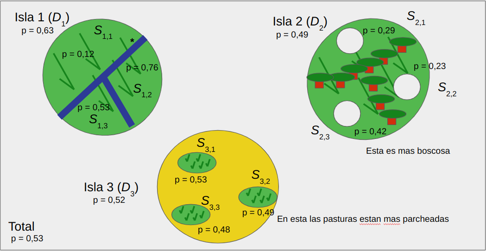

Capítulo 7 Apareamientos no-aleatorios
En los capítulos previos fuimos construyendo un panorama del cambio en las frecuencias alélicas y genotípicas bajo la acción de diferentes fuerzas evolutivas, esencialmente selección, deriva y mutación. En general, trabajamos bajo el supuesto de que en las poblaciones el apareamiento era completamente al azar y por lo tanto directamente ligado al equilibrio de Hardy-Weinberg (que analizamos en profundidad en el capítulo Variación y equilibrio de Hardy-Weinberg). Sin embargo, en muchas poblaciones tal suposición tiene poco fundamento, ya que existen estructuras de apareamiento que implican que la probabilidad de aparearse sea mayor entre ciertos individuos que entre otros. Por ejemplo, para los habitantes de los pequeños pueblos rurales, muchas veces separados entre ellos por la distancia o por barreras naturales, la posibilidad de encontrar pareja en otros puntos alejados del territorio se ve enormemente reducida y por lo tanto, a lo largo de generaciones existirá una tensión entre emigrar (uno de los miembros de las parejas a formar) o encontrar pareja entre los individuos del pueblo, que de alguna manera serán parientes (Bourdieu (2002)).
A nivel de la producción pecuaria, en muchos establecimientos la práctica común eran los rodeos cerrados, donde los reproductores machos se producían también en el establecimiento y por lo tanto eran hijos de alguna hembra del rodeo y hermano de varias de ellas. En el apareamiento “a campo”, sin control de la reproducción para evitar que esos machos se apareen con sus madres, hermanas e hijas, el apareamiento entre parientes es inevitable. En plantas cuyos gametos tienen relativamente poca capacidad de dispersión a grandes distancias es poco razonable pensar que los individuos tengan la misma probabilidad de aparearse con los que lo rodean que con aquellos que se encuentran en extremos opuestos de la población.
Todos estos ejemplos y las situaciones que representan nos llevan a intentar entender qué ocurre cuando no podemos asumir las condiciones de panmixia y sus repercusiones a nivel de las frecuencias genotípicas. Para ello deberemos volver sobre un concepto central, el concepto de identidad por ascendencia para un par de alelos, ya que a partir de él vamos a desarrollar un marco para cuantificar el impacto del apareamiento no-aleatorio.
OBJETIVOS DEL CAPÍTULO
\(\square\) Introducir el concepto de identidad por ascendencia.
\(\square\) Distinguir entre identidad por ascendencia e identidad de estado.
\(\square\) Cómo esto afecta el equilibrio de Hardy-Weinberg,
\(\square\) El impacto en el fitness medio de la población y el concepto de depresión endogámica
\(\square\) Estudiar el rol de la estructura de poblaciones en la diferenciación genética y el papel de la migración en romper la misma.
\(\square\) Discutir brevemente el rol de la estructuración poblacional, y el consecuente apareamiento no-aleatorio, en el surgimiento de nuevas especies. Se distinguirán distintos escenarios que reflejan este fenómeno en las poblaciones naturales.
7.1 El concepto de “identidad por ascendencia” (IBD)
El coeficiente de endocría se define usualmente como la probabilidad de que los dos alelos presentes en un locus sean idénticos por ascendencia (IBD por su siglas en inglés, “Identity By Descent”). Eso nos lleva, obviamente, al concepto de identidad por ascendencia y a entender sus implicancias. Como ya vimos antes, los diferentes tipos y fuentes de variación en el ADN generan copias con diferencias respecto a la molécula original. Esto es lo que hemos usado como definición de alelo. Dos copias de una misma región o locus en el genoma pueden ser idénticas o diferentes. Si son diferentes al nivel que consideramos relevante, entonces directamente las consideramos como alelos diferentes. Sin embargo, aún siendo idénticas a nivel molecular, por ejemplo, podemos distinguir (en teoría) dos orígenes de esta similaridad: a) son idénticas porque derivan de exactamente la misma molécula en un ancestro reciente (que podríamos identificar), o b) son idénticas porque posiblemente derivan de la misma molécula en algún ancestro remoto que no podemos identificar. A la primera posibilidad le llamamos idéntico por ascendencia, mientras que a la segunda le llamaremos idénticos en estado (IBS, por sus siglas en inglés, “Identity By State”). Estos conceptos fueron ampliamente trabajados por el matemático francés Gustave Malécot 61, y constituyen la base del tratamiento “moderno” del parentesco, aspectos en los que ahondaremos en este capítulo y más en el capítulo de Parentesco y Semejanza entre Parientes.
La diferencia entre IBD y IBS la podemos apreciar en dos ejemplos que aparecen en la Figura 7.1. A la izquierda tenemos un individuo que deja dos descendientes, ambos heredando de él una copia del alelo azul. Claramente estamos en una situación donde los alelos azules en \(X\) e \(Y\) son idénticos por ascendencia, ya que pudimos identificar la copia ancestral (en \(A\)) desde la que derivan las dos copias en \(X\) e \(Y\). Más aún, tanto el alelo azul en \(A\) con el alelo azul en \(X\), como el alelo azul en \(A\) con el alelo azul en \(Y\) también son IBD, porque la copia en \(A\) es la considerada ancestral. A la derecha tenemos una situación de los alelos idénticos en estado. Los dos alelos en el individuo \(Z\) son idénticos, pero en la generación anterior, la generación de \(B\) y \(C\), la dos copias de \(Z\) no provienen de una sola copia (i.e., no coalescen). En este caso, cada una de las copias en \(Z\) es IBD con el respectivo alelo azul del padre del que vino, pero no entre ellas.
![Las dos formas de identidad entre alelos. A la izquierda (identidad por ascendencia, IBD), los alelos azules en los individuos \(X\) e \(Y\) son idénticos porque descienden del mismo alelo en \(A\). En cambio, a la derecha, los alelos azules en \(Z\) son idénticos en estado (IBS), porque no logramos identificar un ancestro desde donde provengan estas dos copias (que claramente debería estar en una generación anterior a \(B\) y \(C\)). Las líneas negras continuas identifican relaciones de ancestría entre individuos, las líneas negras punteadas reflejan relaciones entre alelos, mientras que los rectángulos representan los alelos considerados IBD o IBS según el caso.](figuras/IBDIBS2.png)
Figura 7.1: Las dos formas de identidad entre alelos. A la izquierda (identidad por ascendencia, IBD), los alelos azules en los individuos \(X\) e \(Y\) son idénticos porque descienden del mismo alelo en \(A\). En cambio, a la derecha, los alelos azules en \(Z\) son idénticos en estado (IBS), porque no logramos identificar un ancestro desde donde provengan estas dos copias (que claramente debería estar en una generación anterior a \(B\) y \(C\)). Las líneas negras continuas identifican relaciones de ancestría entre individuos, las líneas negras punteadas reflejan relaciones entre alelos, mientras que los rectángulos representan los alelos considerados IBD o IBS según el caso.
Claramente, la diferencia entre considerar un par de alelos IBS o IBD es una cuestión del marco de tiempo definido, ya que exceptuando el caso de mutaciones recurrentes, si dos moléculas (regiones) de ADN son idénticas es porque provienen de la misma molécula ancestral. Esto lo vimos cuando discutimos El modelo coalescente. En la práctica, en el caso de “pedigrees” es usual resolver esto definiendo el límite como el del ancestro más antiguo reconocible de los individuos presentes y asumiendo que todos los individuos para los que se desconoce el ancestro descienden de diferentes padres. Esto es equivalente a decir que en los individuos de esa generación base \(F=0\).
Aprovechando la discusión previa podemos introducir un par de conceptos que nos serán útiles en el resto del capítulo y que revisitaremos en detalle en el capítulo Parentesco y Semejanza entre parientes. El primero es el concepto de coefficient of kinship (que se traduce usualmente como coeficiente de parentesco), y que denotaremos con \(f_{XY}\). El mismo corresponde a la probabilidad de que dos alelos tomados al azar, uno del individuo \(X\) y otro del individuo \(Y\), sean idénticos por ascendencia.
Veamos por ejemplo cómo hacer el cálculo de este coeficiente para la relación padre-hijo. Si volvemos a la Figura 7.1, a la izquierda, y elegimos el hijo \(X\) por ejemplo, tenemos ilustrada la situación sobre la cuál realizar nuestros cálculos. Como hay dos alelos en \(A\) y dos alelos en \(X\), existen 4 formas posibles de elegir un alelo en el padre y un alelo en el hijo: \(A_\text{rojo}\)-\(Y_\text{verde}\), \(A_\text{rojo}\)-\(X_\text{azul}\), \(A_\text{azul}\)-\(X_\text{verde}\), \(A_\text{azul}\)-\(X_\text{azul}\). De esas 4 formas posibles solo hay una en que los 2 alelos elegidos sean IBD (obviamente, la forma \(A_\text{azul}\)-\(X_\text{azul}\)). Es decir, \(f_{AX}=\frac{1}{4}\).
Para el caso de medios hermanos (la relación entre \(X\) e \(Y\) en la figura), la situación es un poco más compleja, pero aún totalmente manejable. La probabilidad de que ambos hijo hereden el mismo alelo de \(A\) es un medio, ya que hay 4 posibilidades (que reciban \(X_\text{rojo}\)-\(Y_\text{rojo}\), \(X_\text{rojo}\)-\(Y_\text{azul}\), \(X_\text{azul}\)-\(Y_\text{rojo}\), \(X_\text{azul}\)-\(Y_\text{azul}\)) y 2 de ellas son IBD. Pero ahora restrinjamonos a un caso en particular, el que contempla la herencia del alelo azul entre los hijos de \(A\). Para este caso hay 4 combinaciones de alelos de un hermano con el otro: \(X_\text{verde}\)-\(Y_\text{azul}\), \(X_\text{verde}\)-\(Y_\text{amarillo}\), \(X_\text{azul}\)-\(Y_\text{azul}\), \(X_\text{azul}\)-$Y_. De estas solo una nos sirve como IBD, es decir \(\frac{1}{4}\) de las posibilidades. Poniendo estos dos eventos independientes juntos (es decir, multiplicando las probabilidades), tenemos que \(f_{XY}=(\frac{1}{2}) \cdot (\frac{1}{4})=\frac{1}{8}\).
Para los casos más sencillos el cálculo es bastante obvio, pero la situación se puede complicar bastante en estructuras de “pedigree” más complejas. En los casos que analizamos arriba, la situación solo involucraba las posibilidades de ningún alelo IBD o de un alelo IBD. Sin embargo, hay muchos casos donde los dos individuos pueden tener ambos alelos IBD. Un caso típico de esto son los hermanos enteros, que comparten padre y madre. En esos casos debemos considerar todas las posibilidades: 0, 1 o 2 alelos idénticos por ascendencia entre los dos individuos. Una forma de simplificar el procedimiento de cálculo es calcular explícitamente las probabilidades de cada uno de estos eventos, de donde será directamente posible sacar la media de alelos idénticos por IBD, que será la sumatoria entre 0 y 2 del número de alelos multiplicada por su probabilidad y dividida entre las cuatro formas diferentes de combinar los dos alelos en cada individuo. Si llamamos \(r_0\), \(r_1\) y \(r_2\) a las probabilidades de 0, 1 o 2 alelos IBD, entonces el coefficient of kinship entre los individuos \(X\) e \(Y\), \(f_{XY}\), estará dado por
\[ f_{XY}=(\frac{1}{4}) \cdot (0 \cdot r_0 + 1 \cdot r_1 + 2 \cdot r_2)=0 \cdot r_0 + (\frac{1}{4}) \cdot r_1 + (\frac{1}{2}) \cdot r_2 \therefore \]
\[ f_{XY}=(\frac{1}{4}) \cdot r_1 + (\frac{1}{2}) \cdot r_2 \tag{7.1} \]
En el cuadro siguiente recolectamos las probabilidades de compartir exactamente 0, 1 o 2 alelos IBD, así como los coeficientes (coefficient of kinship) para algunas relaciones usuales de parentesco
Por ejemplo, para calcular el coeficiente de parentesco (coefficient of kinship) entre Padre-Hijo basta fijarse que \(r_1=1\) y \(r_2=0\), por lo que
\[ f_{PH}=(\frac{1}{4}) \cdot r_1 + (\frac{1}{2}) \cdot r_2= (\frac{1}{4}) \cdot (1) + (\frac{1}{2}) \cdot (0)=\frac{1}{4} \]
Al mismo tiempo, para calcular el coeficiente de parentesco para hermanos enteros, notamos que \(r_1=\frac{1}{2}\) y \(r_2=\frac{1}{4}\), por lo que
\[ f_{HE}= (\frac{1}{2}) \cdot r_1 + (\frac{1}{4}) \cdot r_2 = (\frac{1}{4}) \cdot (\frac{1}{2}) + (\frac{1}{2}) \cdot (\frac{1}{4})=(\frac{1}{8})+(\frac{1}{8})=\frac{1}{4} \]
A la media del número de alelos IBD le llamamos \(\bar{r}\) y es igual a
\[ \bar{r}=0 \cdot r_0 + 1 \cdot r_1 + 2 \cdot r_2=r_1 + 2 \cdot r_2 \tag{7.2} \]
y una forma alternativa de medir el parentesco entre los individuos es el coefficient of relatedness, \(r\), (que lamentablemente también tiene como traducción “coeficiente de parentesco”) y que es igual a la mitad de la media del número de alelos IBD. Es decir,
\[ r=\frac{\bar{r}}{2}=(\frac{1}{2}) \cdot r_1 + r_2 \tag{7.3} \]
Como tanto \(f_{XY}\), como \(r_{XY}\) (notar que ahora usamos como suscrito el identificador de los individuos \(X\) e \(Y\)) son funciones lineales del número medio de alelos, las mismas tienen un relacionamiento directo entre ellas. De hecho,
\[ f_{XY}=\frac{1}{2}r_{XY} \tag{7.4} \]
o lo que es lo mismo
\[ r_{XY}=2 f_{XY} \tag{7.5} \]
Para hacer las cosas un poquito más confusas aún, luego de ver el capítulo El Modelo Genético Básico vamos a poder descomponer los efectos genéticos en varios componentes, y por lo tanto vamos a llamar \(a_{XY}\) lo que en esta sección llamamos \(r_{XY}\), para enfatizar que se trata del parentesco que atañe a los efectos genéticos aditivos.
PARA RECORDAR
Llamamos a dos alelos idénticos por ascendencia (IBD) si los mismos provienen de una misma copia en un ancestro reciente (potencialmente identificable).
En caso de que los alelos sean idénticos pero que no desciendan de la misma copia ancestral (en el marco de tiempo considerado), entonces llamamos a los mismos idénticos en estado (IBS).
El coefficient of kinship, que se traduce usualmente como coeficiente de parentesco, es la probabilidad de que dos alelos tomados al azar, uno del individuo \(X\) y otro del individuo \(Y\), sean idénticos por ascendencia.
Si \(r_0\), \(r_1\) y \(r_2\) son las probabilidades de compartir exactamente 0, 1 o 2 alelos idénticos por ascendencia, entonces el coefficient of kinship entre los individuos \(X\) e \(Y\) queda definido por \(f_{XY}=(\frac{1}{4}) \cdot r_1 + (\frac{1}{2}) \cdot r_2\).
Una medida alternativa de parentesco es el coefficient of relatedness, \(r\), que es igual a la mitad de la media del número de alelos IBD, es decir, \(r=\frac{\bar{r}}{2}=(\frac{1}{2}) \cdot r_1 + r_2\).
La relación entre ambas formas de medir el parentesco es directa, y es igual a \(r_{XY}=2 f_{XY}\).
7.2 Generalización de Hardy-Weinberg para apareamientos no-aleatorios
Basado en estos conceptos de IBD e IBS podemos definir el genotipo del locus como autocigoto si los alelos son réplicas de un único alelo en un ancestro común y alocigoto si no lo son. Es decir, más allá de que los dos alelos en un locus sean idénticos, ahora podemos distinguir un poco más, dependiendo si se trata de dos copias que provienen del mismo ancestro o de diferentes ancestros. Para entender por qué es importante esta distinción veamos qué ocurre en el caso, bastante extremo, de una especie que se reproduce mediante auto-fertilización (i.e., produce ella misma los gametos que generarán su descendencia). Supongamos, por ejemplo, un locus para el que nuestra especie (e.g., una planta) es heterocigoto. Si cada planta deja en promedio otra planta como descendiente, esta planta hija podrá ser heterocigota para dicho locus, con probabilidad \(\frac{1}{2}\) homocigota para uno de los alelos, con probabilidad \(\frac{1}{4}\) u homocigota para el otro alelo, con probabilidad \(\frac{1}{4}\). Si por azar (con probabilidad \(\frac{1}{2}\)) la planta hija es heterocigota, entonces a su vez, la descendencia de la misma será también heterocigota con probabilidad \(\frac{1}{2}\). Es decir, a cada generación se pierde la mitad de los heterocigotas de la generación anterior, que irán a parar por lo tanto a los homocigotas.
Trasladado a la población de plantas y al conjunto de loci, el razonamiento anterior implica que ya no se cumplirán las proporciones esperadas en el equilibrio de Hardy-Weinberg. Es decir, habrá una falta sistemática de heterocigotas. ¿Las causas? Como no invocamos ninguna razón excepcional, salvo que en lugar de tener apareamientos aleatorios en la población la reproducción se da por auto-fertilización, la causa principal debería ser esta. De hecho, como la evolución de los genotipos es al azar en cada planta y cada locus, la probabilidad de que un locus heterocigoto en una planta determinada termine en uno u otro de los homocigotos es idéntica y no se producirá un cambio en las frecuencias alélicas.
![Representación de la distribución de frecuencias alélicas y genotípicas con el coeficiente de endocría \(F\). A la derecha, la probabilidad de que un gen se vuelva autocigótico a causa de la endocría, y a la izquierda la probabilidad de que permanezca como alocigótico pese a la endocría. Los homocigotos se ven incrementados respecto al equilibrio de Hardy-Weinberg en proporción a las frecuencias de sus alelos correspondientes, \(p\) y \(q\). Notar la reducción de los heterocigotos (rectángulo gris central de la izquierda) en función de \(F\). Figura propia a partir de idea en Hartl and Clark (2007).](figuras/Fcuadrado2.png)
Figura 7.2: Representación de la distribución de frecuencias alélicas y genotípicas con el coeficiente de endocría \(F\). A la derecha, la probabilidad de que un gen se vuelva autocigótico a causa de la endocría, y a la izquierda la probabilidad de que permanezca como alocigótico pese a la endocría. Los homocigotos se ven incrementados respecto al equilibrio de Hardy-Weinberg en proporción a las frecuencias de sus alelos correspondientes, \(p\) y \(q\). Notar la reducción de los heterocigotos (rectángulo gris central de la izquierda) en función de \(F\). Figura propia a partir de idea en Hartl and Clark (2007).
Para demostrar lo anterior podemos recurrir a la representación que aparece en la Figura 7.2. Supongamos por ahora que llamamos \(F\) a la probabilidad de que dos alelos en un locus sean IBD (e.g., \(F=\frac{1}{2}\) en el caso de auto-fertilización si asumimos que en la generación parental \(F=0\)). Tenemos entonces dos posibilidades disjuntas: a) que los dos alelos en el locus sean IBD, con probabilidad \(F\) (la parte derecha del cuadrado en la figura), y b) que no sean IBD (pueden ser IBS o ser distintos alelos, parte izquierda del cuadrado), con probabilidad \(1-F\). En este último caso, el comportamiento de los alelos que formarán los cigotos es de equilibrio de Hardy-Weinberg, por lo que los aportes a los gentipos serán: \(p^2(1-F)\) para el \(A_1A_1\), \(2pq(1-F)\) para el \(A_1A_2\) y \(q^2(1-F)\) para el \(A_2A_2\). En el primer caso, es decir cuando los dos alelos son IBD, como para que sean homocigotos los dos gametos deben ser iguales, entonces las frecuencias serán proporcionales a \(p\) y \(q\) (no a \(p^2\) y \(q^2\)), por lo que el aporte a \(A_1A_1\) será de \(pF\) y el aporte a \(A_2A_2\) será de \(qF\). Como se trata de dos eventos disjuntos podemos sumar las probabilidades. Esto nos deja con las siguientes proporciones:
Los resultados de la segunda línea salen simplemente del producto correspondiente en la primera línea. Por ejemplo, \(p^2(1-F)+pF=p^2-p^2F+pF=p^2+F(p-p^2) = p^2+pqF\), ya que \(pq=p(1-p)=p-p^2\). Más aún, si a estas frecuencias le restamos lo que esperamos del equilibrio Hardy-Weinberg, es decir si el apareamiento hubiese sido al azar entre todo el pool de gametos, entonces obtenemos la Diferencia que aparece en la última línea. Claramente hay un enriquecimiento en los genotipos homocigotas, \(pqF\) para cada uno, a costa de los heterocigotas que pierden \(pqF+pqF=2pqF\) (el signo negativo en la última línea indica que pierden esa cantidad). Como \(pqF+pqF-2pqF=0\), la restricción de que deben sumar a 1 se mantiene ya que el balance del cambio neto respecto a HW es cero. Puesto de otra forma, \(p^2+pqF+2pq-2pqF+q^2+pqF=p^2+2pq+q^2+(pqF-2pqF+pqF)=p^2+2pq+q^2=1\).62
Veamos qué ocurre ahora con las frecuencias alélicas. En todos los individuos homocigotas \(A_1A_1\) los alelos serán \(A_1\), mientras que en los individuos heterocigotas \(A_1A_2\) la mitad de los alelos serán \(A_1\). Teniendo en cuenta las frecuencias del cuadro anterior, la frecuencia de \(A_1\) será
\[ (p^2+pqF)+ (\frac{1}{2}) \cdot (2pq-2pqF)=p^2+pqF+pq-pqF=p^2+pq=p \cdot (p+q)=p \]
Es decir, la frecuencia del alelo \(A_1\) no ha cambiado por la estructura reproductiva de la población, pese a que la distribución de los genotipos sí lo ha hecho. Obviamente que, como \(p+q=1\), entonces \(q=1-p\) y como \(p\) sigue siendo la frecuencia de \(A_1\), entonces \(q\) seguirá siendo la frecuencia para \(A_2\) (i.e., la misma que si no existiese esa estructura reproductiva en la población).
Ahora, entendido el concepto de lo que implica para las poblaciones un apareamiento no aleatorio, podemos dar dos definiciones equivalentes de \(F\):
- Probabilidad de que los alelos en un gen cualquiera de un individuo endogámico sean idénticos por ascendencia (IBD)
- Proporción de los loci en un individuo endogámico en que los alelos son idénticos por ascendencia.
PARA RECORDAR
- Cuando los apareamientos no son aleatorios dentro de la población hay una pérdida de heterocigotos y un aumento consiguiente de los homocigotos.
- El coeficiente de endogamia \(F\) es igual a la probabilidad de que los alelos en un gen cualquiera de un individuo endogámico sean idénticos por ascendencia (IBD).
- En forma equivalente, el coeficiente de endogamia es la proporción de los loci en un individuo endogámico en que los alelos son idénticos por ascendencia.
- Las nuevas frecuencias para una población con un coeficiente de endogamia \(F\) estarán dadas por
\[ \begin{split} {fr(A_1A_1)}=p^2(1-F)+pF \\ {fr(A_1A_2)}=2pq(1-F) \\ {fr(A_2A_2)}=q^2(1-F)+qF \end{split} \]
7.3 \(F\) como correlación entre gametos unidos
Hasta ahora hemos trabajado con la noción de \(F\) en términos probabilísticos, ya que la definimos como la probabilidad de que los dos alelos en un gen cualquiera de un individuo endogámico sean IBD (o la proporción de loci con esas condiciones, lo cual es equivalente). Sin embargo, en la concepción original de Sewall Wright (Sewall Wright 1922), \(F\) fue definido como la correlación entre los gametos que se unen para formar un cigoto. Este enfoque es totalmente diferente pero nos lleva (en general) a los mismos resultados que el enfoque probabilístico, aunque la interpretación es algo diferente, así como los límites. Cuando se trata de una probabilidad los límites están definidos por un valor entre \(0\) y \(1\), mientras que cuando se trata de un coeficiente de correlación, sus valores pueden variar en principio de \(-1\) a \(1\).
Veamos entonces cómo arribamos a esta definición. Supongamos que mantenemos la condición de que con una probabilidad \(F\) los genes pueden transformarse en autocigotos a causa de la endocría. Supongamos además, sin pérdida de generalidad, que a los alelos les asignamos un valor numérico, en lugar de un código de letras. Es decir, el alelo \(A_1\) pasa a ser representado por \(1\), mientras que \(A_2\) por \(0\). En el cuadro siguiente podemos ver las posibilidades de formar cigotos a partir de los gametos de machos y de hembras, así como las frecuencias relativas de cada una de las combinaciones (las cuales dedujimos previamente). Vamos a usar \(x\) para el alelo del macho e \(y\) para el alelo que proviene de la hembra.
Como recordarás de los cursos de estadística, la correlación de Pearson es la covarianza entre las dos variables divida por el producto de los desvíos estándar de las mismas (o lo que es equivalente, la raíz cuadrada del producto de las varianzas). Nuestras variables \(x\) e \(y\) son los estados alélicos en gametos de machos y de hembras, codificados en forma numérica. Para calcular la correlación, necesitamos entonces calcular varianzas y covarianzas de nuestras variables aleatorias. En particular, \(\mathbb{V}(x)=\mathbb{E}(x^2)-\mathbb{E}^2(x)\) y \(\mathbb{Cov}(xy)=\mathbb{E}(xy)-\mathbb{E}(x)\mathbb{E}(y)\), por lo que deberemos en primer lugar calcular las esperanzas de ambas variables, de los cuadrados de las mismas y del producto de ambas, ya que las precisamos para calcular varianzas y covarianzas. Para el caso de \(x\), la esperanza estará dada por63
\[ \begin{split} \mathbb{E}(x)=1 \cdot (p^2+pqF) + 1 \cdot (pq-pqF) + 0 \cdot (pq-pqF) + 0 \cdot (q^2+pqF)\ \therefore \\ \mathbb{E}(x)=p^2+pqF+pq-pqF=p^2+pq= p \cdot (p+q) =p \end{split} \tag{7.6} \]
En forma análoga, para \(y\) la esperanza estará dada por
\[ \begin{split} \mathbb{E}(y)=1 \cdot (p^2+pqF) + 0 \cdot (pq-pqF) + 1 \cdot (pq-pqF) + 0 \cdot (q^2+pqF)\ \therefore \\ \mathbb{E}(y)=p^2+pqF+pq-pqF=p^2+pq= p \cdot (p+q) =p \end{split} \tag{7.7} \]
El otro componente de las varianzas es la esperanza de los cuadrados de las variables aleatorias. En el caso de \(x\), la esperanza de \(x^2\) será
\[ \begin{split} \mathbb{E}(x^2)=1^2 \cdot (p^2+pqF) + 1^2 \cdot (pq-pqF) + 0^2 \cdot (pq-pqF) + 0^2 \cdot (q^2+pqF)\ \therefore \\ \mathbb{E}(x^2)=p^2+pqF+pq-pqF=p^2+pq=p \cdot (p+q)=p \end{split} \tag{7.8} \]
mientras que la de \(y^2\) estará dada por
\[ \begin{split} \mathbb{E}(y^2)=1^2 \cdot (p^2+pqF) + 0^2 \cdot (pq-pqF) + 1^2 \cdot (pq-pqF) + 0^2 \cdot (q^2+pqF)\ \therefore \\ \mathbb{E}(y^2)=p^2+pqF+pq-pqF=p^2+pq=p \cdot (p+q)=p \end{split} \tag{7.9} \]
En este punto tenemos todo para calcular ambas varianzas, la de \(x\) y la de \(y\). Para el caso de \(x\), poniendo juntos los resultados de las ecuaciones (7.6) y (7.8), la misma será
\[ \mathbb{V}(x)=\mathbb{E}(x^2)-\mathbb{E}^2(x)=p-p^2=p(1-p)=pq \tag{7.10} \]
y para el caso de \(y\), poniendo juntos los resultados de las ecuaciones (7.7) y (7.9), también será
\[ \mathbb{V}(y)=\mathbb{E}(y^2)-\mathbb{E}^2(y)=p-p^2=p(1-p)=pq \tag{7.11} \]
lo que no nos sorprende dada la simetría del problema (las frecuencias de los gametos son iguales en ambos sexos).
Como vimos antes, para calcular el coeficiente de correlación nos hace falta la covarianza entre ambas variables, mientras que para calcular la misma además de las esperanzas de ambas variables necesitamos la esperanza de su producto. En este caso, la esperanza es
\[ \begin{split} \mathbb{E}(xy)=(1 \cdot 1) \cdot (p^2+pqF) + (1 \cdot 0) \cdot (pq-pqF)+\\ - (0 \cdot 1) \cdot (pq-pqF) + (0 \cdot 0) \cdot (q^2+pqF) \therefore \\ \mathbb{E}(xy)=p^2+pqF \end{split} \tag{7.12} \]
Poniendo juntos los resultados de las ecuaciones (7.6), (7.7) y (7.12), tenemos que la covarianza está dada por
\[ \mathrm{Cov}(xy)=\mathbb{E}(xy)-\mathbb{E}(x)\mathbb{E}(y)=p^2+pqF-p \cdot p=pqF \tag{7.13} \]
Finalmente, juntando ahora los resultados de la ecuación (7.13) (en el numerador) y de las ecuaciones (7.10) y (7.11) (para el denominador), llegamos a nuestro tan ansiado resultado
\[ r_{GU}=\frac{ {Cov}(xy)}{\sqrt{\mathbb{V}(x)\mathbb{V}(y)}}=\frac{pqF}{\sqrt{pq \cdot pq}}=\frac{pqF}{pq}=F \tag{7.14} \]
donde el subíndice \(_{GU}\) corresponde a “gametos unidos”.
En palabras, la correlación entre estados alélicos en los gametos es igual al coeficiente de endogamia F. Cuando no existe endogamia se tiene que \(F=0\), y en ese caso no existe correlación entre los estados alélicos en los gametos (i.e., un gameto con el alelo \(A_1\) en machos no tendrá una “preferencia especial” por algún alelo en los gametos de las hembras). Dado de que en este enfoque \(F\) es un coeficiente de correlación, en principio su valor podría ser negativo. No obstante, esto no ocurre en general en poblaciones naturales, por lo que las dos definiciones son equivalentes.
PARA RECORDAR
- Además del enfoque probabilístico para el coeficiente de endogamia \(F\), existe un enfoque alternativo (que de hecho fue el original, propuesto por Sewall Wright (Sewall Wright 1922)) en el que dicho coeficiente se define como la correlación entre estados alélicos en los gametos que se unen en una población con endocría.
- La correlación entre estados alélicos en los gametos que se unen \(r_{GU}\) es igual al coeficiente de endocría, ya que para gametos \(x\) e \(y\) que se unen
\[ r_{GU}=\frac{ {Cov}(xy)}{\sqrt{\mathbb{V}(x)\mathbb{V}(y)}}=\frac{pqF}{\sqrt{pq \cdot pq}}=\frac{pqF}{pq}=F \]
7.4 Endocría y depresión endogámica
Como vimos en las secciones precedentes, la endocría (i.e., el apareamiento entre parientes) produce un aumento del número de homocigotas y una reducción consiguiente del número de heterocigotas. Como existe un cambio en la frecuencia de los genotipos respecto al apareamiento aleatorio, entonces resulta interesante analizar el impacto que esto produce en el fitness de la población. En el cuadro siguiente combinamos la información de las frecuencias genotípicas esperadas para un coeficiente de endocría \(F\), que vimos en la sección Generalización de Hardy-Weinberg para apareamientos no-aleatorios, con nuestro modelo de fitness para un locus, que vimos en la sección Selección natural en el modelo de un locus con dos alelos.
El fitness medio, que denotaremos como \(\bar{w}_F\) para marcar que se trata de una población bajo endogamia, será entonces la suma de los productos de la segunda y tercer línea del cuadro anterior. Es decir
\[ \begin{split} \bar{w}_F=(p^2+pqF)(1)+(2pq-2pqF)(1-hs)+(q^2+pqF)(1-s)\ \therefore \\ \bar{w}_F=p^2+pqF+2pq-2pqF-2pqhs+2pqFhs+q^2+pqF-q^2s+pqFs \\ \end{split} \tag{7.15} \]
Reagrupando y cancelando términos (e.g., notando que \(p^2+2pq+q^2=(p+q)^2=1^2=1\)), tenemos que la ecuación (7.15) se transforma en
\[ \begin{split} \bar{w}_F=1-(2pqhs+q^2s)-(pqs-2pqhs)F\ \therefore \\ \end{split} \]
\[ \bar{w}_F=1-(2pqhs+q^2s)-2pqs\left(\frac{1}{2}-h\right)F \tag{7.16} \]
Para ver más claro el significado del apareamiento no aleatorio y su resumen numérico, el coeficiente de endocría, en el fitness medio de la población, podemos hacer los cambios de variables
\[ a=(2pqhs+q^2s) \tag{7.17} \]
y
\[ b=2pqs\left(\frac{1}{2}-h\right) \tag{7.18} \]
por lo que podemos escribir la ecuación (7.16) como
\[ \bar{w}_F=1-a-bF \tag{7.19} \]
que es una ecuación lineal en \(F\). En general, para muchos loci asociados al fitness, \(0 < h < \frac{1}{2}\), por lo que el término \(\left(\frac{1}{2}-h\right)\) será positivo, y como además \(2pqs\) también lo es, entonces necesariamente el coeficiente \(b>0\). Como \(0 \leqslant F \leqslant 1\), entonces el fitness medio, en el caso de que éste dependa de un locus, decaerá en forma lineal con el coeficiente \(F\). En este caso, a medida que aumenta el apareamiento entre parientes decrecerá el fitness medio de la población. Esto es una situación muy conocida por todos, y en general las especies han desarrollado mecanismos para evitar el apareamiento entre parientes muy cercanos. Por ejemplo, en la mayoría de las poblaciones humanas se ha desarrollado el tabú del incesto como forma de prevenir esta situación. Pese a esto, resulta notable que Yengo y colaboradores encuentran una prevalencia de eventos extremos de endogamia de \(\sim 1/3652\) en individuos de ancestría europea, nacidos en el Reino Unido entre 1938 y 1967 (Yengo, Wray, and Visscher 2021). En las poblaciones de animales de cría ésta suele ser también una variable de extremo interés a controlar, ya que produce el conocido fenómeno de la depresión endogámica, concepto veremos en mucho más detalle en el capítulo Endocría, exocría, consanguinidad y depresión endogámica.
Una forma alternativa de ver el impacto de la endocría en el fitness medio de las poblaciones consiste en hacer la diferencia entre el fitness en condiciones de apareamiento aleatorio y en condiciones de endocría. De acuerdo a la ecuación (5.6), el fitness medio en condiciones de equilibrio Hardy-Weinberg estará dado por \(\bar{w}=1-2pqhs-q^2s\), lo cual es equivalente a \(\bar{w}=1-(2pqhs+q^2s)\). Al mismo tiempo, de acuerdo a la ecuación (7.16), \(\bar{w}_F=1-(2pqhs+q^2s)-2pqs\left(\frac{1}{2}-h\right)F\), por lo que la diferencia estará dada por
De acuerdo a la diferencia \(\bar{w}_F-\bar{w}\), la disminución del valor de fitness medio que acontece por el apareamiento entre parientes será igual a \(-2pqs\left(\frac{1}{2}-h\right)F=-aF\); es decir, la disminución en el fitness medio será lineal respecto al valor de \(F\).
PARA RECORDAR
El fitness medio de una población en la que el coeficiente de endocría es \(F\) estará dada por \(\bar{w}_F=1-(2pqhs+q^2s)-2pqs\left(\frac{1}{2}-h\right)F\).
Si definimos \(a=(2pqhs+q^2s)\) y \(b=2pqs\left(\frac{1}{2}-h\right)\), entonces el fitness medio quedará expresado como \(\bar{w}_F=1-a-bF\).
La disminución del valor de fitness medio que acontece por el apareamiento entre parientes, respecto al apareamiento bajo condiciones de equilibrio Hardy-Weinberg, será igual \(-2pqs\left(\frac{1}{2}-h\right)F=-aF\). De otra forma, la disminución del fitness medio será directamente proporcional al valor de \(F\).
7.5 Un caso extremo: la autogamia
En plantas es común encontrar el fenómeno de la autogamia, en el que la planta se reproduce consigo misma. Es decir, desde el punto de vista genético la autogamia consiste en la fusión de gametos femeninos y masculinos producidos por el mismo individuo. Esto producirá un incremento en el coeficiente de endocría de generación en generación. Como vimos en la sección El concepto de “identidad por ascendencia” (IBD), el coeficiente de consanguinidad de un individuo es igual al coefficient of kinship entre sus padres. En el caso de tratarse de autogamia los padres son el mismo individuo (\(A\)), por lo que \(F=\frac{1}{2}(1+F_A)\), donde \(F_A\) es es el coeficiente de consanguinidad de \(A\). Multiplicamos por \((1+F_A)\) porque si el individuo \(A\) es consanguíneo, los alelos en su descendencia tienen mayor probabilidad de ser IBD, exactamente en esa proporción (abundaremos en esto, así como una forma gráfica de calcularlo a partir de “pedigrees” en el capítulo Parentesco y Semejanza entre Parientes).
Para ver cómo evoluciona el coeficiente \(F\) a lo largo de las generaciones alcanza con ver que el sistema de apareamiento es regular. Es decir, para una generación \(t\) dada,
\[ F_t=\frac{1}{2}(1+F_{(t-1)}) \tag{7.20} \]
Si en lugar de \(F\) usamos el coeficiente de panmixia, que es \(1-F\), entonces lo anterior se puede transformar fácilmente multiplicando la ecuación (7.20) por \(-1\) y sumando \(1\) a
\[ (1-F_t)=1-\frac{1}{2}(1+F_{(t-1)})=\frac{1}{2}-\frac{1}{2}F_{(t-1)}=\frac{1}{2}(1-F_{(t-1)}) \tag{7.21} \]
Claramente, la ecuación (7.21) invita a seguir con la recurrencia. Por ejemplo, dos generaciones hacia atrás será
\[ (1-F_t)=\frac{1}{2}\left[\frac{1}{2}(1-F_{(t-2)})\right]=(\frac{1}{2})^2(1-F_{(t-2)}) \tag{7.22} \]
Con la misma lógica, \(t\) generaciones hacia atrás el coeficiente de panmixia será
\[ (1-F_t)=(\frac{1}{2})^t(1-F_0) \tag{7.23} \]
con \(F_0\) igual al coeficiente de endocría en la generación inicial. En el caso de que \(F_0=0\), el cual establecemos sencillamente porque no lo conocemos y no podemos rastrear su valor, la ecuación (7.23) se reduce a
\[ (1-F_t)=(\frac{1}{2})^t(1-F_0)=(\frac{1}{2})^t(1-0)=(\frac{1}{2})^t \tag{7.24} \]
Si volvemos a manejarnos con el coeficiente de endocría, basta volver a multiplicar por \(-1\) y sumar \(1\) para llegar a
\[ 1-(1-F_t)=F_t=1-(\frac{1}{2})^t(1-F_0) \tag{7.25} \]
que en el caso de \(F_0=0\) se reduce a \(F_t=1-(\frac{1}{2})^t\). Como vimos antes, \(F\) nos permite seguir la evolución de la reducción en heterocigotas en función del aumento en los homocigotas. La evolución a lo largo de las primeras 10 generaciones se puede ver en la Figura 7.3, donde a partir de un valor inicial de \(F_0=0\) en una generación se alcanza \(F_1=0,5\) y menos de 4 generaciones son suficientes para alcanzar un valor \(F>0,90\).
Figura 7.3: Evolución del coeficiente de endocría a lo largo de las generaciones para el caso de autogamia. A partir de un valor inicial de \(F_0=0\), en una generación el coeficiente alcanza \(F_1=0,5\) (líneas verdes) y en \(\frac{\ln{0,1}}{\ln{0,5}}=3,322<4\) generaciones alcanza el \(90\%\) de su valor máximo.
La autogamia implica entonces un aumento del número de homocigotos y una disminución consiguiente de los heterocigotos, sin implicar un cambio de frecuencias alélicas. Sin embargo, cuando existe selección esto ya no se mantiene. Al mismo tiempo que se produce una reducción en el fitness medio de la población, como vimos en la sección Endocría y depresión endogámica, la selección contra los recesivos deletéreos será mucho más eficiente ya que los mismos dejarán de estar en lo heterocigotos (invisibles o poco visibles para la selección) para pasar a estar mayormente en los homocigotos recesivos, que son vistos plenamente por la selección.
Al mismo tiempo, el desequilibrio de ligamiento tardará mucho más en romperse debido a la reducción en la recombinación, producto de la abundancia de homocigotos. Un ejemplo de especie de interés comercial que experimenta importante autogamia es la cebada (Hordeum vulgare). Al mismo tiempo, las especies que experimentan autogamia en forma parcial permiten hacer una selección extrema para uniformidad de características, mediante la explotación del mecanismo de autogamia durante varias generaciones, lo que implica transformar en homocigotos la mayor parte de los loci. Esto trae aparejado la evidente reducción del fitness, como ya vimos en la sección Endocría y depresión endogámica. Sin embargo, si ahora cruzamos dos variedades altamente uniformes, el híbrido será uniforme también porque se trata de una \(F1\) entre homocigotos, pero explotanto el vigor híbrido (lo opuesto a la depresión endogámica y que veremos mucho más adelante en detalle) poseerá también características excelentes desde el punto de vista productivo.
PARA RECORDAR
La autogamia es la reproducción del individuo consigo mismo y desde el punto de vista genético consiste en la fusión de gametos femeninos y masculinos producidos por el mismo individuo.
En el caso de autogamia el coeficiente de endocría en la generación \(t\), \(F_t\) dado que el valor inicial de la misma es \(F_0\), es igual \(1-(1-F_t)=F_t=1-(\frac{1}{2})^t(1-F_0)\).
La autogamia incrementará rápidamente la frecuencia de homocigotos en la población, a costa de los heterocigotos. Esto provocará una disminución del fitness medio de la población, pero en el caso de alelos recesivos deletéreos también contribuirá a su disminución.
7.6 El coeficiente de endocría y los estadísticos F
Como ya vimos previamente en otros capítulos (por ejemplo, en el capítulo Deriva Genética), las poblaciones de muchas especies se encuentran estructuradas en sub-poblaciones, cada una de ellas con su propia dinámica evolutiva. Por ejemplo, dentro de una región tenemos diferentes cuencas, que a su vez tienen diversos afluentes, donde cada una de ellos posee una conexión con diferentes espejos de agua. Eso nos permite identificar, en forma arbitraria al principio, diferentes niveles dentro de una jerarquía: cuencas, dentro de ellas afluentes y dentro de los mismos los espejos de agua. La estructura puede ser también mucho más sencilla, con un par de niveles, por ejemplo poblaciones aisladas (por una barrera física, por ejemplo) dentro de un conjunto regional de las mismas (i.e., un ensemble poblacional). En este sentido, en lo que nos atañe en el presente capítulo, la estructura reproductiva de cada población del ensemble puede seguir sus propios patrones, lo que se reflejará también en la relación entre frecuencias alélicas y genotípicas de cada una de ellas. Como vimos antes, el apartamiento del apareamiento al azar se refleja usualmente en una carencia de heterocigotos respecto a lo esperado para el equilibrio de Hardy-Weinberg. Es más, definimos un índice de fijación \(F\) como la probabilidad de encontrar en un locus dos alelos idénticos por ascendencia y vimos que la pérdida de heterocigotos era igual a \(2pqF\). Sin embargo, al tener distintas poblaciones (y por lo tanto niveles, por ejemplo individuos, poblaciones, ensemble) necesitamos de alguna forma entender a qué nivel se producen los apartamientos respecto al equilibrio Hardy-Weinberg. Para esto definiremos una serie de estadísticos, primero para representar la heterocigosidad observada y esperada a distintos niveles, y luego unos estadísticos de fijación análogos a nuestro \(F\).
En la Figura 7.4 se observa una representación de una estructura poblacional de una especie diploide, donde diferentes poblaciones (enmarcadas por recuadros verdes) poseen una diferente proporción de alelos de dos colores, rojo y azul, así como distintas proporciones de los 3 genotipos. Todas estas poblaciones se encuentran agregadas en un gran ensemble, encuadrado en azul.
Figura 7.4: Estructuración de una gran población (marco en azul) como un ensemble de poblaciones (marcos en verde) y la distribución de la heterocigosidad observada y esperada a los distintos niveles de agregación, así como los correspondientes estadísticos.
Claramente, dentro de cada población es posible contar la proporción de individuos heterocigotas (si estos fuesen distinguibles por su fenotipo, o si los podemos identificar a nivel molecular) y por lo tanto, si tenemos \(n\) poblaciones, para cada una de ellas obtendremos un estimador \(\hat{H}_i\). Decimos que obtenemos un estimador, y por eso lo señalamos con el “gorro” (i.e., acento circunflejo \(\hat{}\)) porque normalmente solo tenemos una muestra de individuos de cada población. Una manera sencilla de resumir la información respecto a la proporción de heterocigotas de cada una de ellas será la media de la heterocigosidad, es decir
\[ H_I=\frac{1}{n}\sum_{i=1}^{i=n}\hat{H}_i \tag{7.26} \]
Se trata, en este caso de una forma de resumir la información sobre la heterocigosidad observada, producto de los \(F\) a nivel individual (de ahí el subíndice \(I\)). Para cuantificar la reducción respecto a lo esperado al existir dicha estructura, en primer lugar debemos calcular una medida resumen de lo esperado en cada población si las mismas se aparearan (a la interna) al azar. Otra vez, una medida sencilla lo constituye la media de lo esperado en cada una. Por lo tanto,
\[ H_S=\frac{1}{n}\sum_{i=1}^{i=n}2p_iq_i \tag{7.27} \]
ya que en cada una de las \(n\) poblaciones las frecuencias alélicas pueden ser diferentes (de ahí los términos \(p_i\) y \(q_i=1-p_i\)). Llegado este punto solo nos queda definir un nivel de heterocigosidad. Si ponemos todos los individuos juntos, sin importar a qué población pertenezcan, entonces la heterocigosidad esperada global es igual a
\[ H_T=2\bar{p}\bar{q} \tag{7.28} \]
Con todos estos estimadores de heterocigosidad en mano estamos ahora en condiciones de entender la estructura de la pérdida de heterocigosisidad (i.e., a qué nivel y en con qué magnitud se da la pérdida). El primer nivel, dentro de la estructura representada en la Figura 7.4 es el que corresponde a la pérdida entre lo esperado y lo observado dentro de las poblaciones. Como nuestras medidas de heterocigosis esperada y observada son \(H_S\) y \(H_I\) respectivamente, la diferencia entre estas medidas (estandarizada por la esperada) será nuestro índice de fijación a nivel intra población. Es decir, nuestro índice de fijación $F_{IS} será calculado según
\[ F_{IS}=\frac{H_S-{H}_I}{H_S} \tag{7.29} \]
En este caso, las letras que aparecen en el súbíndice representan lo individual o intra-población (\(I\)) versus lo esperado para la población (\(S\), de sub-población). Más aún, \(F_{IS}\) es exactamente igual al \(F\) definido previamente, en la medida de que la media represente adecuadamente lo que ocurre dentro de cada población.
En nuestra estructura, el siguiente nivel sería comparar lo esperado en la población total con lo esperado si se cumpliese el equilibrio de Hardy-Weinberg en cada una de las poblaciones. Una nota importante es que aún cumpliéndose el equilibrio de Hardy-Weinberg en cada población no necesariamente se cumple cuando consideramos a todos los individuos en conjunto. Un ejemplo claro de esto podemos verlo en la Figura 7.5. Dos poblaciones de ovejas en lados opuestos de un río han fijado diferentes alelos para el color: a la izquierda blanco, a la derecha verde. Dentro de cada población las ovejas se aparean libremente, por lo que podemos esperar que se encuentren en el equilibrio de Hardy-Weinberg. El río es una barrera infranqueable para las ovejas, por lo que no hay migración entre ambas poblaciones. Si, mientras recorremos el río en bote, capturamos a las ovejas que pastan en la ribera (el mismo número en una ribera que en la otra), les extraemos una muestra y luego secuenciamos el locus “del color” (en principio no existe dicha cosa, la herencia del color en mamíferos es extremadamente compleja) vamos a llegar a unos números que nos llamarán la atención. Mientras que las frecuencias del alelo blanco y del verde son iguales, es decir \(p=q\), por lo que esperamos una frecuencia \(2pq=2 \cdot (\frac{1}{2}) \cdot (\frac{1}{2})=\frac{1}{2}\) heterocigotos. Sin embargo, en nuestra muestra no hay ningún individuo heterocigoto ya que las ovejas son de dos poblaciones en las que se ha fijado el alelo para el color, por lo que al considerar todo el ensemble (a través de una muestra de ambas poblaciones) nos encontramos con un déficit enorme de heterocigotos. La razón es obvia: se trata de una forma de estructura de apareamiento no-completamente-al-azar (ya que los individuos solo se pueden aparear con los de su respectiva población) y por lo tanto existirá una carencia de heterocigotos, como ya vimos en la sección Generalización de Hardy-Weinberg para apareamientos no-aleatorios. Más allá de ser obvia la razón, lo veremos en más detalle en la sección referida al El efecto Wahlund.
![Reducción en el número de heterocigotos a causa de la estructuración en poblaciones disjuntas. Las ovejas a ambos lados del río, una barrera infranqueable para las mismas, han fijado alelos diferentes para el color de la lana. Si muestreamos las ovejas que aparecen en la ribera, aproximadamente igual número a ambos lados, obtendremos una frecuencia intermedia para los alelos blanco y verde, por lo que esperamos cerca del \(50\%\) de heterocigotos (\(2pq=2 \frac{1}{2}\frac{1}{2}=\frac{1}{2}\)), pero en realidad no hay ningún individuo heterocigoto ya que los alelos están fijados en las dos poblaciones (diseño de las ovejas de http://cliparts.co/clipart/2377087 Fuente: Cliparts.co).](figuras/separadas.png)
Figura 7.5: Reducción en el número de heterocigotos a causa de la estructuración en poblaciones disjuntas. Las ovejas a ambos lados del río, una barrera infranqueable para las mismas, han fijado alelos diferentes para el color de la lana. Si muestreamos las ovejas que aparecen en la ribera, aproximadamente igual número a ambos lados, obtendremos una frecuencia intermedia para los alelos blanco y verde, por lo que esperamos cerca del \(50\%\) de heterocigotos (\(2pq=2 \frac{1}{2}\frac{1}{2}=\frac{1}{2}\)), pero en realidad no hay ningún individuo heterocigoto ya que los alelos están fijados en las dos poblaciones (diseño de las ovejas de http://cliparts.co/clipart/2377087 Fuente: Cliparts.co).
Como hicimos para \(F_{IS}\), para definir el índice de fijación de las (sub) poblaciones respecto al total vamos a hacer la resta de la heterocigosidad total esperada respecto a la esperada para las poblaciones y estandarizamos diviendo entre la heterocigosidad total esperada. Esta no es ni más ni menos que \(2\bar{p}\bar{q}\), siendo \(\bar{p}\) y \(\bar{q}=1-\bar{p}\) las frecuencias calculadas considerando todo el ensemble en su conjunto. Es decir, el índice de fijación de las subpoblaciones respecto al total será
\[ F_{ST}=\frac{H_T-H_S}{H_T} \tag{7.30} \]
Finalmente, con la misma lógica podemos definir el índice de fijación entre lo que ocurre dentro de las poblaciones y el total como
\[ F_{IT}=\frac{H_T-H_I}{H_T} \tag{7.31} \]
Todos estos índices deben ser entendidos en conjunto. De hecho, Sewall Wright planteó la relación entre ellos (S. Wright 1943; WRIGHT 1951) como:
\[ F_{ST} = \frac{(F_{IT}-F_{IS})}{(1-F_{IS})} \tag{7.32} \]
Es posible llegar a otra forma de la relación entre los índices, también muy informativa. Operando sobre la ecuación (7.33), tenemos que
\[ \begin{split} (1-F_{IS}) \cdot F_{ST}=F_{IT}-F_{IS}\ \therefore \\ F_{IT}=F_{ST}+F_{IS}-F_{ST}F_{IS} \end{split} \tag{7.33} \]
Multiplicando por \(-1\) y sumando \(1\) a ambos lados, tenemos
\[ \begin{split} -F_{IT}=-F_{ST}-F_{IS}+F_{ST}F_{IS} F_{ST}+F_{IS} \Leftrightarrow \\ 1-F_{IT}=1-F_{ST}-F_{IS}+F_{ST}F_{IS} F_{ST}+F_{IS} \end{split} \tag{7.34} \]
Pero \((1-F_{ST})(1-F_{IS})=1-F_{ST}-F_{IS}+F_{ST}F_{IS} F_{ST}+F_{IS}\), por lo que poniendo todo junto, la ecuación (7.34) se transforma en
\[ (1-F_{IT})=(1-F_{ST})(1-F_{IS}) \tag{7.35} \]
Por lo que vimos, \(F_{ST}\) representa la diferenciación genética a causa de la estructuración en poblaciones independientes. En general no resulta trivial interpretar su valor sin el apoyo de más evidencia proveniente de otras fuentes, pero como forma de orientación, Hartl y Clark proponen una serie de guías prácticas dadas por Sewall Wright que pueden ayudar a entender la situación (Hartl and Clark 2007; Sewall Wright 1978). Estas son:
- Valores de \(0 \leqslant F_{ST} < 0,05\) indicarían POCA diferenciación genética.
- Valores de \(0,05 \leqslant F_{ST} < 0,15\) indicarían diferenciación genética MODERADA.
- Valores de \(0,15 \leqslant F_{ST} < 0,25\) indicarían GRAN diferenciación genética .
- Valores de \(F_{ST} \geqslant 0,25\) indicarían MUY GRANDE diferenciación genética .
Sin embargo, como también mencionan Hartl y Clark (Hartl and Clark 2007), el mismo Wright advierte que aún valores de \(F_{ST}\) menores a \(0,05\) podrían estar indicando una diferenciación genética significativa, por lo que la interpretación de estos valores no es inmediata (Sewall Wright 1978).
Los estadísticos \(F\) son muy usados para comprender la diversidad genética aún entre especies cercanas. Así, por ejemplo, Loasigaet y colaboradores en un estudio sobre la diversidad del teosinte (Zea perennis), una planta que junto con el maíz (Zea mays) forman el género Zea, comparan seis especies diferentes muy relacionadas entre sí en diferentes regiones de Centroamérica (Loáisiga et al. 2012). Como los híbridos \(F_1\) de teosinte \(\times\) maíz son fértiles, estas especies representan un reservorio importante de material genético para mantener la diversidad del maíz o aún para introducir variantes de genes importantes para la producción (e.g., resistencia a patógenos, tolerancia a metales pesados, etc.). Para estudiar la diversidad estos autores utilizan un juego de 21 microsatélites (SSR) en 120 individuos, detectando un total de 109 alelos diferentes. A partir del análisis de las frecuencias de los alelos y de los genotipos, calculan para el conjunto de las especies un \(F_{IS}=0,0815\), mientras que el \(F_{ST}=0,2017\). Con estos datos resulta claro que el apartamiento de Hardy-Weinberg dentro de las poblaciones es relativamente pequeño, mientras que la mayor parte de la diferenciación aparece entre especies (el equivalente a las poblaciones en nuestros razonamientos previos). De esta forma, el estudio sugiere que es fundamental la conservación de las diferentes especies ya que es donde reside la mayor parte de la diversidad.
Ejemplo 6.1
Consideremos un ensemble de poblaciones constituido por las 3 poblaciones que aparecen en la Figura 7.4. Veamos si existe deficiencia de heterocigotos a algún nivel que nos permita sospechar apareamientos no-aleatorios dentro de las mismas o alguna estructuración geográfica.
Primero vamos a calcular todos los índices de heterocigosidad. La heterocigosidad observada está dada por la ecuación (7.26), es decir (con \(n=3\))
\[ H_I=\frac{1}{n}\sum_{i=1}^{i=n}\hat{H}_i = (\frac{1}{3}) \cdot (0,417 + 0,167 + 0,083) = 0,222 \]
que es el valor en la última columna del cuadro anterior, en la fila correspondiente a la heterocigosidad observada. Si en cada población los apareamientos fuesen al azar esperaríamos en cada una de ellas una proporción de heterocigotos igual a \(2p_iq_i\), que es la que figura en la tercera línea del cuadro anterior y por lo tanto, la heterocigosidad media esperada, de acuerdo a la ecuación (7.27), es
\[ H_S=\frac{1}{n}\sum_{i=1}^{i=n}2p_iq_i = (\frac{1}{3}) \cdot (0,497 + 0,500 + 0,413) = 0,470 \]
Finalmente, la heterocigosidad total esperada, de acuerdo a la ecuación (7.28), es
\[ H_T=2\bar{p}\bar{q}=2\bar{p}(1-\bar{p})=2 \cdot 0,444 \cdot (1-0,444)=0,494 \]
A partir de estos datos podemos calcular ahora los índices de fijación correspondientes. El primero, el que hace a la estructura interna de las poblaciones está dado por la ecuación (7.29) y es por lo tanto
\[ F_{IS}=\frac{H_S-{H}_I}{H_S}=\frac{0,470-0,222}{0,470}=0,528 \]
Basados en este número, podemos decir que se trata de un valor realmente alto y que por lo tanto dentro de las poblaciones (o alguna de ellas) el apareamiento se aparta claramente de lo esperable para las condiciones de panmixia.
Veamos que ocurre al segundo nivel, es decir el índice de fijación de las poblaciones respecto al total de los individuos, que podemos calcular a partir de la ecuación (7.30)
\[ F_{ST}=\frac{H_T-H_S}{H_T}=\frac{0,494-0,470}{0,494}=0,0486 \]
En este caso, el índice de fijación es bastante menor. De acuerdo a las guías prácticas dadas por Wright (Sewall Wright 1978), se trata de un valor (apenas) menor a \(0,05\) y por lo tanto indicativo de poca diferenciación genética entre poblaciones.
El índice de fijación entre el nivel más y menos inclusivo está dado por la ecuación (7.31), es decir
\[ F_{IT}=\frac{H_T-H_I}{H_T}=\frac{0,494-0,222}{0,494}=0,551 \]
Para verificación, usando la ecuación (7.35), tenemos que
\[ (1-F_{IT})=(1-F_{ST})(1-F_{IS})=(1-0,0486)(1-0,528)=0,449 \Leftrightarrow F_{IT}=1-0,449=0,551 \]
que es igual al valor que obtuvimos directamente. En nuestro caso, entonces, se trata de un ensemble de poblaciones donde la mayor parte del deficit de heterocigotos que hemos encontrado se debe un apareamiento no-aleatorio dentro de las poblaciones que lo constituyen y en mucho menor medida debido a la diferenciación genética entre poblaciones.
Una manera alternativa de pensar en \(F_{ST}\) es en términos de partición de la varianza en frecuencias de los alelos. En particular, si pensamos que cada población en un conjunto grande de poblaciones formando el ensemble tiene sus propias frecuencias \(p_i\) y \(q_i\), la varianza en las frecuencia de \(p\), \(\sigma^2_{\bf{p}}\), estará dada por
\[ \sigma^2_{\bf{p}}=\frac{1}{n}\sum_{i=1}^{i=n}(p_i-\bar{p})^2 \tag{7.36} \]
Lo mismo para \(q\), cuya varianza será igual a la de \(p\) y por lo tanto la varianza en frecuencias igual a \(\sigma^2_{\bf{p}}\). Para comparar esta varianza con la del nivel más inclusivo la dividimos entre \(2\bar{p}\bar{q}=\bar{p}(1-\bar{p})\) y por lo tanto
\[ F_{ST}=\frac{2\sigma_{\bf{p}}^2}{2\bar{p}(1-\bar{p})}=\frac{\sigma_{\bf{p}}^2}{\bar{p}(1-\bar{p})} \tag{7.37} \]
La derivación formal de este resultado lo veremos en la sección El efecto Wahlund.
Pese a su importancia, los estadísticos \(F\) han estado sujetos a diferentes interpretaciones, sumado a diferentes formas de calcularlos y a partir de fuentes de información diferente, lo que ha generado no poca confusión. Una revisión importante del tema, con un enfoque en lo que pueden aportar diferentes partes del genoma se encuentra en la revisión de Holsinger y Weir (Holsinger and Weir 2009).
PARA RECORDAR
Las individuos suelen pertenecer a poblaciones que pertenecen a estructuras jerárquicas, que se definen de manera algo arbitraria. Por ejemplo, individuos, dentro de poblaciones, que a su vez están dentro de un ensemble de poblaciones. La estructuración en grupos menores suele implicar una reducción en la heterocigosidad respecto a las condiciones de panmixia.
Definimos tres estadísticos para heterocigosidad, que usaremos para calcular los estadísticos \(F\). Para \(n\) poblaciones la heterocigosidad media observada es \(H_I=\frac{1}{n}\sum_{i=1}^n\hat{H}_i\).
A su vez, la heterocigosidad media esperada dentro de las poblaciones la calculamos como \(H_S=\frac{1}{n}\sum_{i=1}^n2p_iq_i\).
Finalmente, la heterocigosidad esperada global es igual a \(H_T=2\bar{p}\bar{q}\).
\(F_{IS}\): es la correlación de alelos dentro de un individuo en relación con la población en la que se encuentra. A su vez, es la desviación media de las frecuencias de los genotipos con respecto a las expectativas de Hardy-Weinberg dentro de las poblaciones. \(F_{IS}=\frac{H_S-{H}_I}{H_S}\).
\(F_{ST}\): Correlación de alelos elegidos al azar dentro de la misma población en relación con el ensemble de poblaciones; equivalentemente, la proporción de la diversidad genética debida a las diferencias de frecuencia alélica entre poblaciones. \(F_{ST} = \frac{(F_{IT}-F_{IS})}{(1-F_{IS})}\).
\(F_{IT}\): Correlación de alelos dentro de un individuo en relación con toda la población. A su vez, es la desviación de las frecuencias de los genotipos con respecto a las expectativas de Hardy-Weinberg para todo el ensemble de poblaciones. \(F_{IT}=\frac{H_T-H_I}{H_T}\).
\(f_{X}\): Correlación de los alelos dentro de un individuo en relación con la subpoblación en la que se encuentra; equivalente a \(F_{IS}\).
7.7 El efecto Wahlund
Hasta ahora hemos visto el fenómeno de la estructuración en poblaciones desde el lado de la pérdida de heterocigosis respecto a lo esperado bajo régimen de panmixia. Sin embargo, el fenómeno puede verse desde un lado en cierta forma opuesto, o complementario. Cuando dos o más poblaciones que se encontraban totalmente aisladas pasan a mezclarse y a reproducirse en condiciones de panmixia, entonces podemos ver el fenómeno opuesto: el exceso de heterocigotos respecto a la situación anterior (que era equivalente a juntar todos los individuos previo a la reproducción). Obviamente, como las frecuencias genotípicas deben sumar a 1, entonces el aumento de los heterocigotos debe ir acompañado de una reducción igual en los homocigotos. Este fenómeno se conoce como efecto Wahlund en honor del genetista sueco Sten Wahlund 64, que lo describió por primera vez (Wahlund 1928).
Para hacer gráfico este fenómeno, pensemos en la situación descrita en la Figura 7.5. Tenemos dos poblaciones de ovejas con diferentes alelos de color fijados en cada una y las mismas se encuentran aisladas por una barrera infranqueable, que lo constituye el río profundo y ancho. Este aislamiento nos lleva a que si muestreamos ovejas en la ribera del río, pese a encontrar una frecuencia alélica intermedia para el locus (ficticio) del color no vamos a encontrar ningún heterocigoto. Supongamos ahora que en beneficio de los humanos de la zona se construye un puente sobre el río, como lo muestra la Figura 7.6, de tal forma que las ovejas pueden cruzar libremente de un lado para el otro. Suponiendo que las mismas no se ven demasiado cohibidas por lo extraño de sus congéneres al otro lado del río, el próximo apareamiento será en condiciones de panmixia y como el número de animales homocigotos blancos y homocigotos verdes es igual, la frecuencia del alelo blanco será \(\frac{1}{2}\), igual que la del verde, y por lo tanto bajo equilibrio de Hardy-Weinberg esperamos ahora que la frecuencia de los heterocigotos sea de \(2 \cdot (\frac{1}{2}) \cdot (\frac{1}{2})=\frac{1}{2}\).
De hecho, la frecuencia de heterocigotos en el apareamiento bajo panmixia de la población mezcla siempre será mayor al correspondiente del promedio de las poblaciones separadas, a menos que las frecuencias alélicas sean idénticas en las dos poblaciones. Para demostrar esto, asumiendo que ambas poblaciones tienen igual tamaño, alcanza con probar que
\[2 \bar{p}\bar{q}=2 \frac{p_1+p_2}{2}\left[1-\frac{p_1+p_2}{2}\right]\geqslant \frac{2p_1q_1+2p_2q_2}{2} = 2 \frac{p_1(1-p_1)+p_2(1-p_2)}{2}\ \therefore\] \[(p_1+p_2) \left[1-\frac{p_1+p_2}{2}\right] \geqslant p_1(1-p_1)+p_2(1-p_2)\ \therefore\] \[(p_1+p_2)(2-p_1-p_2) \geqslant 2(p_1-p_1^2+p_2-p_2^2)\ \therefore\] \[2p_1+2p_2-p_1^2-p_1p_2-p_1p_2-p_2^2 \geqslant 2p_1-2p_1^2+2p_2-2p_2^2\ \therefore\] \[\begin{equation} p_1^2+p_2^2-2p_1p_2 \geqslant 0 \tag{7.38} \end{equation}\]
Pero \(p_1^2+p_2^2-2p_1p_2=p_1^2-2p_1p_2+p_2^2=(p_1-p_2)^2\), por lo que la inecuación (7.38) se reduce a
\[ (p_1-p_2)^2 \geqslant 0 \tag{7.39} \]
lo que claramente es cierto porque el cuadrado de cualquier número real es mayor o igual a cero, lo que prueba nuestra conjetura de que habrá tantos o más heterocigotos en condiciones de panmixia que cuando consideramos las poblaciones separadas. Más aún, el único caso en que habrán las mismas frecuencias en ambos casos (antes y después de la panmixia) es cuando \(p_1=p_2\), ya que en ese caso \((p_1-p_2)^2=(p_1-p_1)^2=(0)^2=0\).
De hecho, los términos del lado izquierdo de la primera inecuación (7.38) representan la situación luego de la panmixia, mientras que los de la derecha representan la situación antes, por lo que si le restamos a los términos de la izquierda los de la derecha tendremos el \(\Delta_{H}\), es decir el cambio en la frecuencia de heterocigotos por el efecto Wahlund. Esto es lo que hicimos en la última línea de las ecuaciones (7.38), excepto que en la tercera línea multiplicamos ambos lados de la inecuación por 2, así que ahora debemos multiplicar por \(\frac{1}{2}\). Por lo tanto, para dos poblaciones, el cambio de frecuencias viene dado por
\[ \Delta_H=\frac{1}{2}(p_1^2+p_2^2-2p_1p_2) = \frac{1}{2}(p_1-p_2)^2 \tag{7.40} \]
A mayor diferencia en las frecuencias de las poblaciones, mayor será el efecto de unión y panmixia.
![Efecto de Wahlund al establecerse una conexión masiva entre dos poblaciones completamente diferenciadas. Si bien previo a la existencia del puente ambas poblaciones se encontraban en equilibrio de Hardy-Weinberg, al estar fijados los alelos (diferentes) en ambas, no existían heterocigotos. Al aparecer la posibilidad de panmixia, las frecuencias alélicas se mantienen pero ahora la mitad de las ovejas serán heterocigotas (diseño de las ovejas de http://cliparts.co/clipart/2377087 Fuente: Cliparts.co).](figuras/separadasWahlund2.png)
Figura 7.6: Efecto de Wahlund al establecerse una conexión masiva entre dos poblaciones completamente diferenciadas. Si bien previo a la existencia del puente ambas poblaciones se encontraban en equilibrio de Hardy-Weinberg, al estar fijados los alelos (diferentes) en ambas, no existían heterocigotos. Al aparecer la posibilidad de panmixia, las frecuencias alélicas se mantienen pero ahora la mitad de las ovejas serán heterocigotas (diseño de las ovejas de http://cliparts.co/clipart/2377087 Fuente: Cliparts.co).
Este fenómeno también lo podemos interpretar a través de los diagramas de de Finetti, que ya vimos en el capítulo Variación y equilibrio de Hardy-Weinberg. En efecto, como vimos antes y como se ve en la Figura 7.7, dentro del triángulo que define el espacio posible de frecuencias genotípicas, el equilibrio de Hardy-Weinberg estará determinado por la curva que va desde el vértice \(aa\) hasta el vértice \(AA\). Cualquier población que se encuentre en equilibrio de Hardy-Weinberg deberá estar sobre esta curva. Supongamos ahora que tenemos nuestras dos poblaciones separadas, con frecuencias del alelo dominante (este detalle no importa realmente) \(p_1\) y \(p_2\). Dadas estas frecuencias y al saber que dentro de ellas se cumplen las condiciones para el equilibrio de Hardy-Weinberg implica que basta cortar la curva con una línea perpendicular a la arista entre \(aa\) y \(AA\) por el punto \(p_i\) para determinar las frecuencias genotípicas en cada población antes del evento de panmixia. Para cualquier combinación lineal de las dos poblaciones, pero en particular para la mezcla en iguales proporciones, la frecuencia del conjunto antes de la reproducción será \(\bar{p}\) y estará ubicada en \(p_1 \leqslant \bar{p} \leqslant p_2\), mientras que las proporciones genotípicas estarán dadas por el corte de la perpendicular en \(\bar{p}\) con el segmento de recta entre \(1\) y \(2\). Claramente, para cualquier par de puntos sobre la curva, o dicho de otra forma para cualquier par de frecuencias \(p_1\) y \(p_2\), el corte de la perpendicular por \(\bar{p}\) con el segmento entre \(1\) y \(2\) estará siempre por debajo del corte por la misma perpendicular con la curva de equilibrio Hardy-Weinberg (por ejmplo, marcado como \(y\) en la figura). Como esas distancias representan en el diagrama de de Finetti la proporción de heterocigotos, entonces, cuando \(p_1 \ne p_2\), el promedio de las poblaciones separadas tendrá siempre menos heterocigotos que la población mezclada y en panmixia.
![Diagrama de de Finetti ilustrando el efecto de Wahlund. Dos poblaciones separadas, con frecuencias \(p_1\) y \(p_2\), ambas en equilibrio de Hardy-Weinberg están por lo tanto sobre la curva que va desde \(aa\) a \(AA\) y que marca la región permitida para el equilibrio H-W. La proporción de cada uno de los genotipos al combinarlas (sin apareamiento) será el promedio y por lo tanto estará representado por el punto medio en la recta que las une. Sin embargo, si ocurre apareamiento entre ambas el punto estará sobre la curva de equilibrio, que claramente está por encima de la recta siempre y por lo tanto la frecuencia de los heterocigotas será mayor. Figura tomada de Wikipedia, CC BY-SA 2.5 (Archivo:De Finetti diagram.svg).](figuras/deFinetti_diagram.png)
Figura 7.7: Diagrama de de Finetti ilustrando el efecto de Wahlund. Dos poblaciones separadas, con frecuencias \(p_1\) y \(p_2\), ambas en equilibrio de Hardy-Weinberg están por lo tanto sobre la curva que va desde \(aa\) a \(AA\) y que marca la región permitida para el equilibrio H-W. La proporción de cada uno de los genotipos al combinarlas (sin apareamiento) será el promedio y por lo tanto estará representado por el punto medio en la recta que las une. Sin embargo, si ocurre apareamiento entre ambas el punto estará sobre la curva de equilibrio, que claramente está por encima de la recta siempre y por lo tanto la frecuencia de los heterocigotas será mayor. Figura tomada de Wikipedia, CC BY-SA 2.5 (Archivo:De Finetti diagram.svg).
La importancia del efecto Wahlund está directamente asociada al papel que jueguen los heterocigotos en las características de interés. Por ejemplo, en características donde el alelo recesivo es deletéreo, los heterocigotos tenderán a tener un fenotipo “normal” y por lo tanto la mezcla de poblaciones diferentes llevará a un descenso en el número de individuos con la patología. En seres humanos son comunes los ejemplos de enfermedades raras hereditarias que disminuyen la frecuencia en forma importante en los recién nacidos producto del mestizaje de poblaciones. Más aún, como veremos más adelante, la exocría (el fenómeno opuesto a la endocría) puede tener grandes ventajas en el mejoramiento genético que son explotadas a través de los cruzamientos y cuya importancia depende tanto de la ventaja de los heterocigotos como de la diferencia de frecuencias entre las poblaciones que se cruzan.
Una forma interesante y diferente de ver este fenómeno es a través de su relación con el índice de fijación a nivel de poblaciones, \(F_{ST}\), que vimos antes. Supongamos que nuevamente estamos con dos poblaciones separadas con el mismo número de individuos en ambas, y que luego de un evento dado se juntan y se aparean bajo panmixia. Supongamos que, sin pérdida de generalidad, el alelo de frecuencia \(q_i\) es recesivo y que denotaremos a la frecuencia de los homocigotos recesivos con \(Q\). Al mezclar las dos poblaciones y darse la reproducción bajo panmixia, vamos a observar un decrecimiento de en la frecuencia de homocigotos (tanto recesivos como dominantes) debido al efecto Wahlund. Como ambas poblaciones previo a la mezcla se encontraban en equilibrio Hardy-Weinberg, la frecuencia de homocigotos recesivos previo a la unión será el promedio de los mismos en ambas poblaciones, es decir \(\mathrm{Q_{separadas}}=\frac{q_1^2+q_2^2}{2}\). Luego de la mezcla, bajo condiciones de panmixia, la frecuencia de los homocigotos recesivos será \(\mathrm{Q_{unidas}}=\bar{q}^2\), con \(\bar{q}=\frac{q_1+q_2}{2}\). Por lo tanto, la diferencia (i.e., pérdida de homocigotos recesivos) será igual a
\[ \begin{split} {Q_{separadas}}- {Q_{unidas}}=\frac{q_1^2+q_2^2}{2}-\bar{q}^2= \frac{q_1^2+q_2^2-2\bar{q}^2}{2} \Leftrightarrow \\ {Q_{separadas}}- {Q_{unidas}}=\frac{(q_1^2-\bar{q}^2)+(q_2^2-\bar{q}^2)}{2} \end{split} \tag{7.41} \]
Sin embargo, operando con el numerador vamos a demostrar que \((q_1^2-\bar{q}^2)+(q_2^2-\bar{q}^2)\) es igual a \((q_1-\bar{q})^2+(q_2-\bar{q})^2\). Partiendo de esta última expresión pasamos a desarrollarla
\[ \begin{split} (q_1-\bar{q})^2+(q_2-\bar{q})^2=q_1^2-2q_1\bar{q}+\bar{q}^2+q_2^2-2q_2\bar{q}+\bar{q}^2 \\ = q_1^2+q_2^2+2\bar{q}^2-2\bar{q}(q_1+q_2) \end{split} \tag{7.42} \]
Pero \(\bar{q}=\frac{(q_1+q_2)}{2} \Leftrightarrow (q_1+q_2) = 2\bar{q}\), por lo que sustituyendo en la ecuación (7.42) tenemos
\[(q_1-\bar{q})^2+(q_2-\bar{q})^2=q_1^2+q_2^2+2\bar{q}^2-2\bar{q}(q_1+q_2)\ \therefore\] \[(q_1-\bar{q})^2+(q_2-\bar{q})^2=q_1^2+q_2^2+2\bar{q}^2-2\bar{q}(2\bar{q})=q_1^2+q_2^2+2\bar{q}^2-4\bar{q}^2\ \therefore\] \[(q_1-\bar{q})^2+(q_2-\bar{q})^2=q_1^2+q_2^2-2\bar{q}^2=(q_1^2-\bar{q}^2)+(q_2^2-\bar{q}^2)\ \therefore\] \[\begin{equation} (q_1-\bar{q})^2+(q_2-\bar{q})^2 = (q_1^2-\bar{q}^2)+(q_2^2-\bar{q}^2) \tag{7.43} \end{equation}\]
Por lo tanto, conseguimos demostrar que el numerador de (7.41) se puede escribir como \((q_1-\bar{q})^2+(q_2-\bar{q})^2\), por lo que sustituyendo en dicha ecuación llegamos a que
\[ {Q_{separadas}}- {Q_{unidas}}=\frac{(q_1-\bar{q})^2+(q_2-\bar{q})^2}{2}=(\frac{1}{2}) \cdot (q_1-\bar{q})^2 + (\frac{1}{2}) \cdot (q_2-\bar{q})^2 \tag{7.44} \]
Claramente, la forma de la ecuación (7.44) es la de una varianza, es decir, la diferencia entre los valores y la media de los mismos, elevada al cuadrado y ponderada por la frecuencia (que en este caso es \(\frac{1}{2}\) para cada población). Por lo tanto, podemos llamar a esto la varianza en homocigotos “recesivos” debido al pasaje a la panmixia, es decir
\[ {Q_{separadas}}- {Q_{unidas}}=\sigma_{q}^2 \tag{7.45} \]
En palabras, el efecto de Wahlund provoca una disminución de la frecuencia de homocigotas recesivos luego de la mezcla de poblaciones y apareamiento bajo panmixia igual a la varianza de frecuencias alélicas (del alelo recesivo) entre poblaciones. Más aún, este mismo razonamiento lo podemos hacer para el homocigoto en el otro alelo (que notaremos \(P\)) y por lo tanto por analogía tenemos
\[ {P_{separadas}}- {P_{unidas}}=\sigma_{p}^2 \tag{7.46} \]
Pero como \(p+q=1\), entonces \(\sigma_{p}^2=\sigma_{q}^2=\sigma^2\), ya que \(\mathbb{V}(x+k)=\mathbb{V}(k-x)=\mathbb{V}(x)\) para cualquier constante \(k\). Como el efecto en la pérdida de homocigotos ahora es la suma de la pérdida en los “recesivos” y en los “dominantes”, es decir la reducción total en homocigotos será igual a
\[ \text{Red. homocigosis}*\text{ total}=\sigma*{p}^2+\sigma_{q}^2=2\sigma^2 \tag{7.47} \]
Claramente, la reducción en homocigotos tiene que ser acompañada por un incremento igual en los heterocigotos en la panmixia respecto a la situación de las dos poblaciones separadas, \(H_T-H_S\). Es decir que
\[ \text{Red. homocigosis}_\text{ total}=2\sigma^2=H_T-H_S \tag{7.48} \]
Al mismo tiempo, bajo panmixia \(H_T=2 \bar{p}\bar{q}\). Ahora, si vamos a nuestra definición original del coeficiente \(F_{ST}\), ecuación (7.30), tenemos que
\[ F_{ST}=\frac{H_T-H_S}{H_T}=\frac{2\sigma^2}{2\bar{p}\bar{q}}=\frac{\sigma^2}{\bar{p}(1-\bar{p})} \tag{7.49} \]
que es el mismo resultado al que habíamos arribado en la ecuación (7.37). Esto nos deja con una alternativa razonable para la estimación del índice de fijación. Asumiendo tamaños similares de las poblaciones, alcanza con conocer las frecuencias de los alelos en las distintas poblaciones, con lo que podremos calcular tanto \(\sigma_p^2\) como \(\bar{p}\) y por lo tanto obtener el estimador
\[ \hat{F}_{ST}=\frac{\hat{\sigma}_p^2}{\bar{p}(1-\bar{p})} \tag{7.50} \]
Ejemplo 6.2
Una población donde segrega un locus bi-alélico \(A\) se estructura en un ensemble poblacional, pasando a conformarse por cuatro subpoblaciones de tamaño efectivo \(N_e = 200\). Se asume que las mismas se reproducen bajo régimen de panmixia.
a. En un momento dado, las frecuencias para el alelo \(A_1\) son \(p_1 = 0,61,\ p_2 = 0,77,\ p_3 = 0,65,\ p_4 =0,63\). Calcule la pérdida de heterocigosidad en la población total debido al estructuramiento de la misma.
b. ¿Cuantas generaciones son necesarias para que la divergencia genética entre poblaciones pueda ser considerada como muy grande?
Solución
a. Dado que las subpoblaciones tienen igual tamaño, la frecuencia alélica promedio \(\bar{p} = \frac{0,61+0,77+0,65+0,63}{4} = 0,665\); esto implica que la heterocigosidad esperada en la población total es de \(H = 2\bar{p}(1-\bar{p}) = 2 \cdot 0,665 \cdot (1-0,665) = 0,44555\). El promedio de heterocigosidad observado, sin embargo, es de \(\bar{H} = [2\cdot0,61\cdot(1-0,61) + 2\cdot0,77\cdot(1-0,77) + 2\cdot0,65\cdot(1-0,65) + 2\cdot0,63\cdot(1-0,63)]/4 = 0,4378\). Por lo tanto, la estructuración poblacional implica una pérdida de frecuencia de heterocigotas de al momento \(\Delta_H = 0,44555-0,4378 = 0,00775\) considerado.
b. La varianza para las frecuencias alélicas en un ensemble poblacional crece linealmente según (ver capítulo Deriva Genética):
\[ \sigma^2_p = t\cdot\frac{\bar{p}(1-\bar{p})}{2N_e} \]
A su vez, la divergencia genética entre poblaciones se puede estimar con
\[ \hat{F}_{ST} = \frac{\sigma^2_p}{\bar{p}(1-\bar{p})} \]
Siguiendo la propuesta de Sewall Wright, podemos considerar que la divergencia genética es muy alta cuando \(F_{ST} \gg 0,25\). Combinando estos tres elementos, tenemos
\[ \begin{split} \hat{F}_{ST} = \frac{\sigma^2_p}{\bar{p}(1-\bar{p})} \gg 0,25 \\ \frac{(t\cdot\frac{\bar{p}(1-\bar{p})}{2N_e})}{\bar{p}(1-\bar{p})} \gg 0,25 \\ t\cdot \frac{\bar{p}(1-\bar{p})}{2N_e \cdot \bar{p}(1-\bar{p})} \gg 0,25 \\ t \cdot \frac{1}{2N_e} \gg 0,25 \\ t \gg 2 \cdot N_e \cdot 0,25 \\ t \gg 2 \cdot 200 \cdot 0,25 \\ t \gg 100 \end{split} \]
Por lo tanto, sólo considerando la acción de la deriva genética como fuente de varianza de frecuencias alélicas en el ensemble, se espera que luego de unas cien generaciones estas poblaciones posean una divergencia genética muy alta para el locus considerado.
PARA RECORDAR
- Se conoce como efecto Wahlund al fenómeno del incremento de la frecuencia de heterocigotas luego de la unión de la mismas y la reproducción bajo condiciones de panmixia, respecto al promedio de dos poblaciones antes de la unión.
- Para dos poblaciones, en un locus diploide con dos alelos, con frecuencias del alelo \(A_1\) \(p_1\) y \(p_2\), ambas poblaciones en equilibrio Hardy-Weinberg, el aumento en la frecuencia de heterocigotas, \(\Delta_H\), será
\[ \Delta_H=\frac{1}{2}(p_1^2+p_2^2-2p_1p_2) = \frac{1}{2}(p_1-p_2)^2 \]
- El efecto Wahlund nos permite obtener un estimador de la diferenciación entre poblaciones que consiste en dividir la varianza en frecuencias de un alelo en las poblaciones (\(\hat{\sigma}_p^2\)) entre el producto de la media de frecuencias y su complementario a 1 (\(\bar{p}\bar{q}=\bar{p}(1-\bar{p})\)), es decir
\[ \hat{F}_{ST}=\frac{\hat{\sigma}_p^2}{\bar{p}(1-\bar{p})} \]
7.8 Subdivisión, migración y el modelo de islas
En las primeras secciones de este capítulo nuestro enfoque fue el de considerar el fenómeno del apareamiento no-aleatorio desde la perspectiva de las modificaciones de la frecuencias genotípicas a la interna de las poblaciones y en el surgimiento de una fuente importante de variación en estas frecuencias a partir de la estructuración en unidades aisladas, las poblaciones. Notablemente, analizamos el déficit en heterocigotos resultante del apareamiento no-aleatorio, tanto a nivel interno de las poblaciones como el que surge de la estructuración en poblaciones aisladas. En la sección El efecto Wahlund vimos el fenómeno del apareamiento no-aleatorio desde una perspectiva opuesta: cómo el apareamiento al azar de una mezcla de poblaciones nos llevaba a destruir esa estructuración previa y la vuelta al nivel de heterocigotos esperado, incrementando su frecuencia y disminuyendo consecuentemente la de los homocigotos. La sección presente está basada en el enfoque de Hartl y Clark (Hartl and Clark 2007), que al mismo tiempo de mantenerse simple expone los principales conceptos con claridad. Un tratamiento bastante claro pero mucho más extenso, con otros varios modelos considerados, aparece en el texto de Hamilton (Hamilton 2009), que recomendamos para quién quiera profundizar pero manteniendo la simplicidad matemática.
Claramente, la mezcla total de poblaciones es un evento relativamente infrecuente respecto a otras formas de comunicación genética entre poblaciones. Mucho más frecuentes son los procesos de migración de individuos entre poblaciones. A nivel de poblaciones humanas, todos conocemos los grandes procesos migratorios, entre ellos los relativamente recientes (a escala evolutiva) que permitieron la constitución actual de nuestro continente. En poblaciones animales de interés comercial, por ejemplo, el “mejoramiento” del ganado criollo existente hacia las distintas razas bovinas mediante la migración y apareamiento con individuos provenientes de poblaciones europeas es un fenómeno patente. De hecho, en aquellas especies en las que la sustitución de una población por otra resulta impracticable, la introgresión de material genético “deseable” suele ocurrir a partir de un mecanismo que es perfectamente asimilable a la migración de individuos de una población a otra (unidireccional, en estos casos). En general, tanto en poblaciones humanas como de otras especies, el patrón de flujo genético suele ser bastante más complicado que el envío de unos cuantos migrantes de una población hacia otra. Por ejemplo, en la historia de nuestro continente aún se especula sobre los tiempos de entrada de los primeros pobladores y si se trató de uno o varios eventos independientes. Más aún, la llegada de los conquistadores europeos introdujo una importante asimetría en los apareamientos ya que por decenios solo llegaron hombres al continente, que procreaban con mujeres nativas, lo que produjo un fuerte sesgo en los cromosomas Y de los mestizos, así como en el ADN mitocondrial de todos los descendientes (ya que dicho material genético se hereda casi exclusivamente por vía materna). Esto nos lleva a su vez a que distintos tipos de marcadores moleculares cuentan partes distintas de la historia, y a que en general debamos interpretar con mucha precaución los datos genéticos ya que es difícil sintetizar historias complejas en unos pocos estimadores.
Una forma sencilla de entrar al tema del efecto de las migraciones en las frecuencias alélicas es a través del más sencillo de los modelos, como lo ilustra la Figura 7.8.
Figura 7.8: Modelo de isla para estudiar el efecto de la migración en el cambio de frecuencias alélicas. El continente posee una población de tamaño infinito, mientras que en la isla la población es de tamaño \(N\). En cada generación una proporción \(m\) de los individuos de la isla es reemplazada por migrantes que vienen del continente y \(Nm\) individuos parten de las isla hacia lugar desconocido.
El centro de este modelo es una isla con una población de tamaño constante \(N\) que a cada generación recibe una proporción \(m\) de migrantes desde el continente, que asumimos de tamaño poblacional infinito (claramente, alcanza con que sea muy grande, pero el supuesto de infinito simplifica razonamientos). Obviamente, como el tamaño de la población de la isla es constante, el arribo de \(Nm\) inmigrantes desde el continente debe significar la partida de \(Nm\) (emigrantes) hacia algún lado (desconocido e irrelevante para nuestro modelo).
Una analogía física de este modelo se puede ver en la Figura 7.9.
Figura 7.9: Analogía física para el modelo de continente-isla. Un tanque grande de colorante azul (análogo a la población en el continente) tiene un goteo permanente que cae en un tanque pequeño (isla) de colorante rojo. La salida del tanque pequeño será de la mezcla entre los dos colorantes (que asumimos instantánea), por lo tanto de color rojo al principio, luego violeta y yendo hacia el azul a largo plazo.
Un tanque muy grande con colorante azul (que en nuestra analogía hace el papel de continente) rebosa hacia un tanque más pequeño (también podría ser una canilla que pierde), debajo de este (que hace el papel de isla). El tanque que está debajo esta inicialmente lleno de colorante rojo. A medida de que las gotas de colorante azul caen la mismas se mezclan con el colorante rojo del tanque inferior, por lo que el rebose de este tanque (que mantiene el nivel por el desagüe de la derecha) va cambiando de color: inicialmente rojo, luego violeta y yendo hacia el azul a medida de que la mayoría del colorante inicial ha sido reemplazado por el colorante azul que cae. Notar que no hay una entrada de colorante rojo, mientras que el aporte de colorante azul a este tanque es infinito.
Volvamos al modelo ilustrado en la Figura 7.8. Consideremos que estamos tratando nuevamente con un gen con dos alelos, \(A_1\) y \(A_2\) en un organismo diploide. Siguiendo la notación de Hartl y Clark (Hartl and Clark 2007), llamaremos \(p\) a la frecuencia actual de \(A_1\) en la isla, mientras que usaremos \(p^{\star}\) para la frecuencia del mismo alelo en el continente. Claramente, la frecuencia de \(A_1\) en la siguiente generación en la isla, que denotaremos \(p'\), será igual a \(p\) por la fracción de individuos de la isla que no emigran, más la fracción de inmigrantes por \(p^{\star}\), es decir
\[ p'=(1-m)p+mp^{\star} \tag{7.51} \]
Si ahora le restamos \(p^{\star}\) a ambos lados de la ecuación (7.51) y operamos, tenemos que
\[ \begin{split} p'-p^{\star}=(1-m)p+mp^{\star}-p^{\star}=(1-m)p+p^{\star}(m-1)=(1-m)p-p^{\star}(1-m)\ \therefore \\ p'-p^{\star}=(1-m)(p-p^{\star}) \end{split} \tag{7.52} \]
Claramente, la ecuación (7.52) se trata de una recurrencia, donde calculamos el valor de cada generación como el producto del término de interés en la generación anterior (\(p-p^{\star}\)) por un factor constante, en este caso \((1-m)\). Cada generación hacia atrás volvemos a multiplicar por este factor constante. Por lo tanto, considerando \(t\) generaciones hacia atrás este término se transformará en \((1-m)^t\), multiplicado por la diferencia de frecuencias original entre la población de la isla \(p_0\) y la del continente, \(p^{\star}\) (i.e., \((p_0-p^{\star})\)). Poniendo todo junto, tenemos ahora
\[ p_t-p^{\star}=(1-m)^t(p_0-p^{\star}) \Leftrightarrow \]
\[ p_t=p^{\star}+(1-m)^t(p_0-p^{\star}) \tag{7.53} \]
El resultado de la ecuación (7.53) es muy claro y ya hemos visto ecuaciones de forma similar. Se trata de la suma de un término constante, que es la frecuencia del alelo \(A_1\) en la población del continente, \(p^{\star}\), más una función de la diferencia entre el valor inicial de la isla \(p_0\) respecto al continente. En función de que el número de generaciones \(t\) entra como exponente de una constante \(0 \leqslant (1-m)<1\) que multiplica a la diferencia de frecuencias iniciales, la forma del decaimiento del segundo término de la derecha en la ecuación (7.53) será geométrica, o aproximadamente exponencial. Es decir, la frecuencia del alelo \(A_1\) en la isla se aproximará rápidamente al valor del continente, disminuyendo la diferenciación genética entre ambas poblaciones.
El modelo anterior, uni-direccional, es extremadamente simplista y atiende unas pocas situaciones. Un modelo algo más general es el modelo de islas, que aparece representado en la Figura 7.10. En este modelo todas la poblaciones (4 en nuestro ejemplo) poseen igual tamaño y aparecen totalmente conectadas en el intercambio de individuos (o gametos). De hecho, cada una de las \(d\) poblaciones (o “demes”, con \(d=4\) en nuestro ejemplo) intercambia en cada generación una proporción \(m/d\) con cada una de las otras (envía y recibe), incluida ella misma (simbolizado por las flechas recurrentes en color azul). Esto es equivalente a pensar que en cada generación, cada una de las poblaciones aporta una proporción \(m\) de sus gametos a un pool central (marcado por el círculo rojo en el centro) y luego recibe de ese pool exactamente la misma proporción \(m\) de gametos, pero ahora elegidos al azar del pool.
![Modelo de islas, con 4 poblaciones. Las frecuencias del alelo \(A_1\) de cada una aparece dentro de los círculos correspondientes. Cada población intercambia con las otras exactamente la misma cantidad de migrantes, en nuestro caso \(m/4\) (incluyéndose ella misma), por lo que el modelo es equivalente a que cada población aporte una proporción \(m\) de gametos a un pool central y luego reciba del pool esa misma proporción \(m\) elegidos al azar. Elaboración propia sobre idea en Hartl y Clark (Hartl and Clark 2007).](figuras/islandModel2.png)
Figura 7.10: Modelo de islas, con 4 poblaciones. Las frecuencias del alelo \(A_1\) de cada una aparece dentro de los círculos correspondientes. Cada población intercambia con las otras exactamente la misma cantidad de migrantes, en nuestro caso \(m/4\) (incluyéndose ella misma), por lo que el modelo es equivalente a que cada población aporte una proporción \(m\) de gametos a un pool central y luego reciba del pool esa misma proporción \(m\) elegidos al azar. Elaboración propia sobre idea en Hartl y Clark (Hartl and Clark 2007).
Como el pool central está formado por muestreos representativos de las distintas poblaciones, la frecuencia del alelo \(A_1\) en el mismo será \(\bar{p}\) (el promedio de todas las poblaciones), y como además todos los gametos vuelven a alguna población, la media no cambiará en el tiempo. Supongamos ahora que atendemos la frecuencia del alelo \(A_1\) en una cualquiera de las poblaciones en una generación \(t\) dada. La probabilidad de que ese alelo \(A_1\) venga de la misma población en la generación anterior es el producto de la frecuencia de \(A_1\) en la generación por la probabilidad de no haya migrado, que es \((1-m)\), más la probabilidad de que sea un migrante (que fue al pool y volvió) multiplicado por la frecuencia en el pool, que es \(\bar{p}\). En conjunto, esto implica por lo tanto que
\[ p_t-\bar{p}=(1-m)(p_{(t-1)}-\bar{p}) \tag{7.54} \]
De hecho, nosotros elegimos la generación \(t\) como referencia, pero podríamos haber elegido la generación (\(t-1\)), por lo que cambiando de símbolos, también podemos decir que
\[ p_{(t-1)}-\bar{p}=(1-m)(p_{(t-2)}-\bar{p}) \tag{7.55} \]
En función de esto, sustituyendo el \((p_{(t-1)}-\bar{p})\) de la ecuación (7.54) por el lado derecho de la ecuación (7.55), tenemos
\[ p_t-\bar{p}=(1-m)(1-m)(p_{(t-2)}-\bar{p})=(1-m)^2(p_{(t-2)}-\bar{p}) \tag{7.56} \]
Sucesivamente, si seguimos \(t\) generaciones hacia atrás en esta recursión llegamos, obviamente, a que
\[ p_t-\bar{p}=(1-m)^t(p_{0}-\bar{p}) \Leftrightarrow p_t=\bar{p}+(1-m)^t(p_{0}-\bar{p}) \tag{7.57} \]
Donde \(p_0\) es la frecuencia inicial del alelo \(A_1\) en la población particular que estamos considerando (alguna de las \(d=4\) demes que elegimos para estudiar, en nuestro caso). La ecuación (7.57) tiene una forma análoga a la de la ecuación (7.53), en el modelo isla-continente. La diferencia fundamental es que mientras que en el modelo isla-continente nos acercamos generación a generación a \(p^{\star}\) (frecuencia del alelo \(A_1\) en el continente); en el modelo de islas nos acercamos en cada isla (población o deme) a \(\bar{p}\) (frecuencia media del alelo \(A_1\) en el ensemble de poblaciones). En razón de la similitud, el comportamiento cualitativo de la reducción en la diferenciación será similar entre los dos modelos.
Que las migraciones contribuyen a romper la diferenciación genética entre poblaciones queda ya muy claro. La pregunta relevante es cómo cuantificamos este efecto. Como vimos previamente en Homocigosidad y Heterocigosidad, la recursión para obtener el valor de \(F\) en la generación \(t\) a partir del valor en la generación anterior \((t-1)\) dentro de una población cualquiera (e.g., la de la isla), era
\[ F_t=\frac{1}{2N}+\left(1-\frac{1}{2N}\right)F_{(t-1)} \tag{7.58} \]
como aparece en la Figura 4.10. Es decir, la probabilidad de que sean IBD es la probabilidad de que sean idénticos en esa generación (\(\frac{1}{2N}\)), más la probabilidad de que sean distintos alelos muestreados en esta generación pero que esos alelos fueran idénticos en la anterior (\(\left(1-\frac{1}{2N}\right)F_{(t-1)}\)). Consideremos ahora la situación con migración, asumiendo que podemos reemplazar \(F\) por \(F_{ST}\) llegado el momento (ya veremos por qué). En cualquiera de los dos casos que representan los términos de la derecha de la ecuación (7.58), los gametos será idénticos si ninguno de los dos alelos es reemplazado por un alelo inmigrante, lo que ocurre con probabilidad \((1-m)\) cada evento independiente, es decir \((1-m)(1-m)=(1-m)^2\). Por lo tanto, agregando este factor a cada uno de los eventos de la derecha, la ecuación (7.58) se transforma en
\[ F_t=\left(\frac{1}{2N}\right)(1-m)^2+\left(1-\frac{1}{2N}\right)(1-m)^2F_{(t-1)} \tag{7.59} \]
En el equilibrio, es decir cuando no cambie la diferenciación debida a la entrada de inmigrantes a la isla, \(F\) no cambiará más en el tiempo, por lo que \(F_t=F_{(t-1)}=\hat{F}\). Sustituyendo \(F_t\) y \(F_{(t-1)}\) por \(\hat{F}\) en la ecuación (7.59) nos deja con la siguiente igualdad
\[ \hat{F}=\left(\frac{1}{2N}\right)(1-m)^2+\left(1-\frac{1}{2N}\right)(1-m)^2\hat{F} \tag{7.60} \]
Expandiendo los términos en \((1-m)^2\) y operando llegamos a que
\[ \begin{split} \hat{F}=\left(\frac{1}{2N}\right)(1-2m+m^2)+\left(1-\frac{1}{2N}\right)(1-2m+m^2)\hat{F}\ \therefore \\ \hat{F}=\frac{1}{2N}-\frac{2m}{2N}+\frac{m^2}{2N}+\hat{F}-2m\hat{F}+m^2\hat{F}-\frac{1}{2N}\hat{F}+\frac{2m}{2N}\hat{F}-\frac{m^2}{2N}\hat{F}\ \therefore \end{split} \tag{7.61} \]
En general \(m\) es relativamente pequeño, por lo que \(m^2\) es muy pequeño (el cuadrado de un número entre \(0\) y \(1\) es menor que el número mismo) y \(m \ll N\), por lo que podemos despreciar los factores de orden \(m^2\) y \(\frac{m}{N}\) y la ecuación (7.61) queda aproximada según
\[\hat{F} \approx \frac{1}{2N}+\hat{F}-2m\hat{F}-\frac{1}{2N}\hat{F}\ \therefore\] \[\hat{F}-\hat{F}+2m\hat{F}+\frac{1}{2N}\hat{F} \approx \frac{1}{2N}\ \therefore\] \[2m\hat{F}+\frac{1}{2N}\hat{F} \approx \frac{1}{2N}\ \therefore\] \[\hat{F}\left(2m+\frac{1}{2N}\right) \approx \frac{1}{2N}\ \therefore\] \[\hat{F}\frac{1+4Nm}{2N} \approx \frac{1}{2N}\ \therefore\] \[\hat{F}(1+4Nm) \approx 1\]
Si bien \(\hat{F}\) es el estimador de \(F_{IT}\), asumiendo panmixia dentro de las poblaciones tenemos que \(F_{IS}=0\), y entonces
\[ \begin{split} (1-F_{IT})=(1-F_{ST})(1-F_{IS})=(1-F_{ST})(1-0)=(1-F_{ST}) \Leftrightarrow \\ (1-F_{IT})=(1-F_{ST}) \Leftrightarrow F_{IT}=F_{ST} \end{split} \]
Por lo tanto, bajo panmixia dentro de las poblaciones, \(F_{IT}=F_{ST}\) y por lo tanto \(\hat{F}\) se transforma en un estimador de \(\hat{F}_{ST}\), es decir
\[ \hat{F}_{ST} \approx \frac{1}{1+4Nm} \tag{7.62} \]
La importancia de la ecuación (7.62) es evidente: la diferenciación genética entre poblaciones en el modelo de islas depende en forma inversa de \(1+4Nm\). Recordemos que en nuestro modelo de isla-continente \(Nm\) es el número de inmigrantes que arriban a la isla en cada generación, y \(\hat{F}\) solo depende de su producto, por lo que considerarlos en conjunto nos permite una interpretación independiente de todas las combinaciones de valores. Claramente, al depender en forma inversa de \(Nm\), cuanto mayor la cantidad de inmigrantes por generación, menor será la diferenciación genética esperada. La Figura 7.11 representa los valores de equilibrio esperados de acuerdo al número de migrantes por generación. Claramente, el decaimiento de \(\hat{F}*{ST}\) es muy rápido, y ya con solo un migrante por generación alcanza para mantener un valor de \(\hat{F}*{ST}=0,2\) (línea verde). Alcanza con 5 migrantes por generación para que el valor de \(F_{ST}=0,05\) (línea azul), que de acuerdo a las guías prácticas dadas por Wright para la interpretación de \(F_{ST}\) indicaría que por debajo de ese valor casi no existe diferenciación genética.
Figura 7.11: Valores de \(F_{ST}\) en el equilibrio en función del número de inmigrantes por generación. La línea verde representa el valor esperado de diferenciación genética en el equilibrio con un solo migrante por generación, que es de \(0,2\). La línea azul representa el valor \(F_{ST}=0,05\) que de acuerdo con las guías prácticas dadas por Wright representan situaciones donde casi no existe diferenciación genética.
Ejemplo 6.3
Siete islas forman parte de un archipiélago, en donde viven subpoblaciones de tamaños similares de una especie de ave. Un estudio determina las frecuencias alélicas (\(p_i\)) para un locus marcador en varias de estas subpoblaciones, arrojando los siguientes valores: \(p_1 = 0,55,\ p_2 = 0,68,\ p_3 = 0,70,\ p_4 = 0,61,\ p_5 = 0,72,\ p_6 = 0,58,\ p_7 = 0,82\).
¿El flujo de individuos entre las islas influye notablemente en el grado de diferenciación genética entre poblaciones de las islas?
Solución
Asumiendo que se cumple el modelo de islas, se tiene que el número de migrantes promedio por generación entre las mismas equivale a \(\hat{F}_{ST} = \frac{1}{1 + 4Nm}\).
Dadas las frecuencias alélicas, podemos estimar \(\hat{F}_{ST}\) según \(\hat{F}_{ST} = \frac{\sigma^2_p}{\bar{p}(1-\bar{p})}\).
Con las frecuencias alélicas dadas, se tiene que \(\bar{p} = \frac{0,55+0,68+0,70+0,61+0,72+0,58+0,82}{7} \approx 0,67\) (donde se asume que las subpoblaciones muestreadas tienen tamaños similares). Luego, se tiene que \(\sigma^2_p = \frac{1}{7} \sum_{i=1}^{i = 7} (p_i- \bar{p})^2 = 0,0086619\). Esto implica \(\hat{F}_{ST} \approx \frac{0,0086619}{0,67 \cdot (1 - 0,67)} \approx 0,039\), por lo que siguiendo las guías prácticas propuestas por Sewall Wright nuestras estimaciones sugieren un bajo grado de diversificación genética entre las subpoblaciones.
Combinando ambas ecuaciones, podemos estimar el número de migrantes que podría estar involucrado en mantener a las poblaciones homogéneas a nivel genético
\[\hat{F}_{ST} = \frac{\sigma^2_p}{\bar{p}(1-\bar{p})} = \frac{1}{1 + 4Nm} \Rightarrow 1 + 4Nm = \frac{\bar{p}(1-\bar{p})}{\sigma^2_p}\] \[4Nm = \frac{\bar{p}(1-\bar{p})}{\sigma^2_p} -1 \Rightarrow Nm = \frac{1}{4}(\frac{\bar{p}(1-\bar{p})}{\sigma^2_p} -1)\] \[Nm = \frac{1}{4} \cdot (\frac{((\frac{0,55+0,68+0,70+0,61+0,72+0,58+0,82}{7}))(1-(\frac{0,55+0,68+0,70+0,61+0,72+0,58+0,82}{7}))}{0,0086619} -1)\] \[N_m \approx 6,2\]
PARA RECORDAR
En el modelo de isla-continente el flujo de información genética es uni-direccional, del continente a la isla, a través de una proporción de \(m\) migrantes por generación. La frecuencia del alelo \(A_1\) en la isla, al cabo de \(t\) generaciones estará dado por \(p_t=p^{\star}+(1-m)^t(p_0-p^{\star})\), con \(p_0\) la frecuencia inicial en la isla y \(p^{\star}\) la frecuencia en el continente (que no cambia con las generaciones ya que su tamaño es infinito y además no recibe otro influjo).
En el modelo de islas, el flujo de información genética es simétrico entre las \(d\) islas que constituyen el ensemble de poblaciones (incluyendo la propia isla). Esto es equivalente a que en cada generación todas las islas envían una proporción \(m\) de sus gametos a un pool central y que luego reciben esa misma proporción de gametos (pero de la mezcla), antes de la reproducción. En estas condiciones, la frecuencia del alelo \(A_1\) en cualquiera de las islas estará dada por \(p_t=\bar{p}+(1-m)^t(p_{0}-\bar{p})\), con \(\bar{p}\) la media de las frecuencias del alelo \(A_1\) en las islas y \(p_{0}\) la frecuencia inicial en la isla que estamos considerando.
Las migraciones de individuos entre poblaciones contribuyen a romper el efecto de diferenciación genética entre ellas a causa de la evolución diferente de las frecuencias alélicas en ellas. En general alcanza con unos pocos migrantes por generación para reducir sustantivamente la diferenciación genética. La relación entre el número de migrantes \(Nm\) y el estadístico \(F_{ST}\) está dada por \(\hat{F}_{ST} \approx \frac{1}{1+4Nm}\).
7.9 Mecanismos de especiación
Si bien actualmente la ciencia acepta la teoría evolutiva Darwinista como la base de la existencia de las diferentes especies que habitan nuestro planeta, los mecanismos por detrás de formación de las nuevas especies continúa siendo un tópico álgido en el campo de la evolución. Es decir, bajo el concepto de que una especie es diferente de otra si es imposible obtener descendencia fértil de la unión de ambas, resulta claro que debemos dilucidar cuáles son los mecanismos que producen esas barreras reproductivas entre individuos hasta hace poco muy cercanos, y cuál es la importancia relativa de cada una de ellos.
En la Figura 7.12 se muestran algunos de los mecanismos posibles de especiación.
Figura 7.12: Mecanismos de especiación. Imagen tomada de Wikipedia, Speciation_modes.svg: Ilmari Karonen derivative work: Mircalla22 (talk) - Speciation_modes.svg, CC BY-SA 3.0, https://commons.wikimedia.org/w/index.php?curid=8637025.
De acuerdo a lo que vimos en la sección Subdivisión, migración y el modelo de islas, aún un flujo bajo de migrantes por generación alcanza para reducir sustancialmente la diferenciación genética entre poblaciones, diferenciación sin la cuál es imposible pensar en la formación de especies, al menos en los loci directamente relacionados al bloqueo reproductivo. Es decir, al menos para los loci involucrados en la formación de las barreras pre-cigóticas (aquellas que tienen lugar antes o durante la fecundación) o de las barreras post-cigóticas (las que afectan la viabilidad de los individuos producidos, por ejemplo a partir de abortos espontáneos, esterilidad del híbrido, muerte prematura, híbridos débiles, etc.) debe existir una diferenciación importante.
El primer mecanismo que vemos en la figura, a la izquierda, es el de la especiación alopátrica. En la misma, en determinado momento en la historia evolutiva de una especie surge algún tipo de barrera física que separa una parte de los individuos de los otros. Ejemplos de aparición geológica de estas barreras puede ser el surgimiento de una cadena montañosa, la aparición de un cuerpo de agua en el medio del territorio original (e.g., la aparición de islas como producto del ascenso del nivel del mar en los grandes deshielos), el surgimiento de una barrera de tierra para poblaciones acuáticas (e.g., el istmo de Panamá) y cualquier otro evento que impida el intercambio por un tiempo suficiente de material genético. Las poblaciones en aislamiento unas de otras irán acumulando diferencias genética entre ellas, ya sea por los procesos estocásticos (deriva, mutación) como por procesos selectivos. Es importante notar que luego de generadas las barreras reproductivas no importa si las poblaciones vuelven a co-existir en el territorio (e.g., por la unión de islas al volver a bajar el nivel del mar) ya que al no ser capaces de generar descendencia fértil no existirá flujo genético entre ellas. Un ejemplo muy claro de este proceso de formación de especies lo vimos en la sección Selección direccional y es el de los pinzones de Darwin, donde debido a la relativamente importante barrera física que constituye la distancia entre islas, el número de migrantes entre poblaciones es pequeño, dándose las condiciones para la acumulación de diferencias genéticas entre poblaciones. Otros ejemplos notables incluyen el enanismo insular y el gigantismo insular, fenómenos en los que los individuos de una especie que se encuentran aislados en una isla desarrollan un tamaño completamente fuera del rango normal para la especie y terminan generando barreras reproductivas físicas (biológicas), entre otras. Las razones que se postulan son variadas, pero en general se refieren a un proceso selectivo diferencial: a medida que los recursos naturales se agotan en la isla, animales más pequeños necesitan menores cantidades de alimento y de espacio habitable, por lo que se ven favorecidos (enanismo insular), mientras que en ausencia de limitantes en los recursos, mayores tamaños suelen competir mejor (gigantismo insular). Un ejemplo de enanismo insular lo constituye el elefante pigmeo de la isla de Malta (Palaeoloxodon falconeri, extinto), cuya altura a la grupa no sobrepasaba el metro en los machos (y menos en las hembras). Los dodos (Raphus cucullatus, también extintos) en cambio constituyen un ejemplo de gigantismo insular: si bien evolucionaron a partir de la familia de las palomas, su altura era de cerca de 1 metro y pesaban más de 10 kg.
La segunda forma que aparece en la Figura 7.12 es la especiación peripátrica, donde una parte de los individuos de la especie (en general en el borde del rango geográfico) comienzan un proceso de diferenciación gradual a partir de una reducción en el intercambio de material genético con el resto. En principio se trata también de un fenómeno asociado a la distancia física entre individuos, y por lo tanto es un mecanismo más esperable en especies con capacidad de dispersión reducida. La causa de la reducción del intercambio no tiene por que ser geográfica ya que uno de los factores iniciales invocados es la adaptación a condiciones particulares del nicho. Lo esencial para nosotros, en el contexto de este capítulo, es la posibilidad de que las preferencias de apareamiento por individuos cercanos, sumado a la reducción sustantiva del intercambio con la población global, constituyen los elementos sustantivos para este mecanismo de especiación.
En la especiación parapátrica se produce sin una separación completa de las especies “original” y “derivada”, que pueden compartir parte importante de su rango geográfico e incluso hibridar en determinadas locaciones. El mecanismo que se suele invocar es la adaptación local a condiciones diferentes dentro del rango y la reducción de la viabilidad de los híbridos respecto a las formas contrastantes, aunque se trata de un mecanismo usualmente difícil de diferenciar de la especiación alopátrica con contacto posterior a la especiación.
Finalmente, en la especiación simpátrica el proceso de diferenciación genética se da en el mismo rango geográfico, es decir sin separación de la especie “original” y la “derivada” (el concepto de original y derivada es a veces difícil de entender ya que ambas poblaciones derivan de una misma especie y acumulan cambios estocásticos ambas). El mecanismo usualmente invocado incluye la adaptación a nichos ecológicos bien diferentes dentro del rango geográfico o aún la creación de híbridos entre individuos de demes adaptados a dichos nichos. Un ejemplo a veces invocado de este tipo de especiación es la formación de una especie asexual a partir de una especie sexual. En general se invoca la Selección disruptiva, que vimos en la sección Diferentes formas de selección, como el proceso por detrás de este mecanismo de selección.
En resumen, para que exista especiación es necesaria la diferenciación genética de una parte de los individuos de una especie determinada. Para la existencia de esta diferenciación es necesario que exista una reducción sustancial de los migrantes entre demes por el tiempo suficiente hasta la aparición de las barreras reproductivas entre dichos demes. Las preferencias de apareamiento por individuos cercanos (i.e., el apareamiento no-aleatorio) constituye la base de la generación de diferenciación genética y ha sido el objeto de todo este capítulo.
PARA RECORDAR
- La base para el proceso de especiación es la diferenciación genética entre poblaciones que lleva a la aparición de barreras reproductivas que impiden la descendencia fértil.
- En la especiación alopátrica, en determinado momento en la historia evolutiva de una especie surge algún tipo de barrera física que separa una parte de los individuos de los otros. Ejemplos de ese tipo de barreras físicas pueden ser el surgimiento de una cadena montañosa, la aparición de un cuerpo de agua en el medio del territorio, la aparición de islas como producto del ascenso del nivel del mar y cualquier otro evento que impida el intercambio por un tiempo suficiente de material genético.
- En la especiación peripátrica una parte de los individuos de la especie, en general en el borde del rango geográfico comienzan un proceso de diferenciación gradual a partir de una reducción en el intercambio de material genético con el resto. Se puede decir que en este caso también se trata de un aislamiento por distancia.
- En las especiaciones parapátrica y simpátrica el proceso de diferenciación genética se da en el mismo rango geográfico, es decir sin separación de la especie “original” y la “derivada” y los mecanismos involucrados tienen que ver con la especialización de nicho o la adaptación a condiciones locales.
7.10 Conclusión
En capítulos anteriores se trató cómo la formación de ensembles poblacionales lleva a la divergencia de las frecuencias alélicas entre subpoblaciones del ensemble. Este fenómeno puede ser meramente estocástico (caso cual hablamos de deriva genética), ligado a una ventaja selectiva diferencial en cada ensemble (donde el cambio en frecuencias será sistemático), o como el producto de una mezcla entre estas fuerzas. En términos más generales, una población puede estar estructurada en varios niveles jerárquicos. La existencia de estos niveles jerárquicos de estructuración implica la existencia de apareamientos no aleatorios entre los individuos de la población general; en última instancia, esto implica el apareamiento entre parientes de menor o mayor cercanía, lo cual implica un consiguiente aumento de la homocigotas. En este capítulo formalizamos este concepto (e.g., definiendo la identidad por descendencia), a la vez que ahondamos en el manejo de coeficientes de fijación que nos permiten evaluar el grado de estructuración de una población. Por último, es importante remarcar que la migración constituye una fuerza que hace un contrapunto a la estructuración poblacional, pudiendo revertir su efecto aún cuando el número de migrantes por generación sea bajo. En el largo plazo, la síntesis entre estas procesos define el grado de divergencia genética entre los niveles jerárquicos de una población estructurada, pudiendo dar lugar a fenómenos tan importantes como la especiación en poblaciones naturales.
7.11 Actividades
7.11.1 Control de lectura
- Durante este capítulo se introdujeron los conceptos de identidad por ascendencia (IBD) e identidad por ascendencia (IBS). A su vez, se introdujo el concepto de alocigosis y autocigosis. Responda:
- a) ¿Un par de alelos IBD puede ser autocigota, alocigota o ambos?
- b) ¿Qué sucede para el caso de un par de alelos IBS?
- c) ¿Puede un par de alelos ser homocigota y alocigota al mismo tiempo? **¿En dicho caso, serían IBD o IBS?.
- En el capítulo Deriva Genética se introdujo el coeficiente de fijación \(F\), definido como la probabilidad de que dos alelos heredados por un individuo fueran idénticos por ascendencia. La estructuración poblacional lleva a la definición de los estadísticos \(F_{IS}\), \(F_{ST}\) y \(F_{IT}\).
- Defina a cada uno de estos coeficientes, tanto conceptual como matemáticamente.
- ¿Cómo se puede describir matemáticamente el vínculo entre estos coeficientes?.
- Explique, ¿cuál es la utilidad de los mismos para el estudio de la estructuración poblacional?
- Cuando existe un régimen de apartamiento no aleatorios en una pobación, se observa un déficit de heterocigotas en la misma respecto a lo esperado bajo equilibrio de Hardy-Weinberg. Este fenómeno es conocido como efecto Wahlund. Describa a qué se debe este fenómeno, teniendo en cuenta el rol que juega la deriva genética a nivel de frecuencias alélicas en dicha situación.
- La estructuración poblacional lleva a un apareamiento no-aleatorio entre los individuos pertenecientes a cada subpoblación. La migración entre estas subpoblaciones, sin embargo, equivale a un flujo de alelos entre subpoblaciones al aumentar la cantidad de apareamientos entre individuos de diferentes supoblaciones. ¿Qué tan efectiva es la migración en entre subpoblaciones en este aspecto, según el modelo de islas? ¿Se requiere de muchos migrantes por generación entre diferentes subpoblaciones para que la población total se comporte acorde a lo esperado bajo panmixia?
- La existencia de apareamientos no-aleatorios en una población puede derivar en el largo plazo en el fenómeno de especiación. Según la forma de estructuración pueden distinguirse diferentes modos de especiación. Clasifique el modo de especiación en los siguientes ejemplos:
- La gramínea A. capillaris es una especie perteneciente a Eurasia. En regiones mineras existe diferente composición geoquímica respecto a suelos no explotados. Algunas variantes de A. capillaris se desarrollan mejor que en los suelos naturales (y vice versa Si bien existe hibridación entre las variantes, la misma posee desventaja selectiva. En el largo plazo, se genera especiación entre las poblaciones de regiones mineras y silvestres. [Ejemplo obtenido de Boggs (Boggs 2001)].
- Antes de la formación de las remotas Hébridas exteriores existía un único tipo de oveja fluorescente de la raza Scottish Blackface, las cuales se veían verdes bajo la luz crepuscular. Luego de la formación de las islas surgió en una de las subpoblaciones insulares un alelo que generó fluorescencia roja, fijándose en la en esta población (que además acumuló otros cambios morfológicos). Hoy en día las dos especies de ovejas ya no pueden generar descendencia fertil.
- En Camerún existen pequeños lagos en cráteres. En un momento dado, existió una diversificación rápida de especies de peces cíclidos (familia Cichlidae); cada especie se adaptó a diferentes nichos dentro de estos pequeños lagos, en donde conviven juntas. [Ejemplo obtenido de Boggs (Boggs 2001)].
- Se ha reportado que una población de mosquitos se adaptó al metro subterráneo de Londres, denominándose a la especie Culex molestus La especie Culex pipens, de la que habría derivado C. molestus* posee diferencias biológicas marcadas: a modo de ejemplo, la primera hiberna en invierno, mientras que la especie del subterráneo se reproduce todo el año. [Ejemplo inspirado en Fonseca y colaborades, (Fonseca et al. 2004)].
7.11.2 ¿Verdadero o falso?
- Si dos alelos son idénticos por ascendencia (IBD) deben ser idénticos en estado (IBS), ya que el estado de los alelos es, naturalmente, el mismo.
- Si los individuos que conforman las subpoblaciones de un ensemble poblacional se aparean aleatoramente dentro de cada subpoblación, la probabilidad de que dos alelos sean IBD en un individuo de la población (i.e., \(F_{IT}\)) equivale a la proporción de la diversidad genética debida a las diferencias de frecuencia alélica entre poblaciones.
- El aumento de apareamiento entre parientes que se da cuando se estructura una población lleva a una disminución del fitness medio de la población. Esta disminución es linealmente proporcional al coeficiente de fijación \(F\)
- La formación de un ensemble poblacional lleva con el tiempo a un exceso de individuos homocigotas (i.e., déficit de heterocigotas) en cada subpoblación respecto a lo esperado bajo equilibrio de Hardy-Weinberg. Cuando se considera el total de la población, sin embargo, se observa un déficit de heterocigotas; este fenómeno se conoce como efecto Wahlund.
- La migración entre las subpoblaciones de un ensemble poblacional constituye un fenómeno que contrarresta los efectos de la estructuración poblacional (asumiendo que dentro de las subpoblaciones existe un régimen de panmixia). No obstante, es necesario de muchos migrantes por generación para que el aporte de alelos por migración se imponga al aumento de homocigosis que se espera debido a la estructuración poblacional.
Solución
- Falso. El término “idéntico por estado” no debe ser tomado de forma literal. Está claro que dos alelos deberán ser idénticos en su estado si provienen de un mismo alelo ancestral identificado (i.e., si son “IBD”). No obstante, justamente se define a un par de alelos como “idénticos por estado” (IBS) cuando los alelos son idénticos pero no se puede identificar al ancestro remoto del cual derivan.
- Verdadero. Se plantea un ensemble poblacional en el cual se asume panmixia para cada una de subpoblaciones. Esto implica \(F_{IT} = 0\), y dado que \((1-F_{IT}) = (1-F_{IS}) (1-F_{ST}) \Leftrightarrow 1 - F_{IT} = 1 - F_{ST} \Rightarrow F_{IT} = F_{ST}\). Esto es de alguna forma intuitivo: si dentro de las poblaciones existe panmixia, entonces la probabilidad de que dos alelos sean IBD en un individuo debe relacionarse únicamente, en el esquema planteado, con el aumento de heterocigosidad debido a que las distintas subpoblaciones no se aparean de forma aleatoria entre sí.
- Verdadero. En efecto, el fitness medio de una población estructurada decrecerá según a linealmente respecto al coeficiente de fijación \(F\) una cantidad \(\Delta = -bF\), con \(b = 2pqs[(\frac{1}{2})-h]\). Resulta interesante remarcar que, según el modelo explayado en este libro, existirá una disminución en el fitness promedio de la población siempre y cuando \(h < \frac{1}{2}\); en casos donde \(h > \frac{1}{2}\) (modo de acción génica que contempla algunas dominancias incompletas y el caso de las sobredominancia) el modelo predice un aumento del fitness promedio de la población.
- Falso. La estructuración poblacional sí lleva a un exceso de homocigotas en cada subpoblación. Esto se traduce, no obstante, como un déficit de individuos heterocigotas cuando se contempla el total de la población (lo cual se conoce como efecto Wahlund).
- Falso. Al menos asumiendo un modelo sencillo, como el “modelo de islas” planteado por Sewall Wright, una tasa migratoria baja (i.e. de uno o dos migrantes por generación entre subpoblaciones) es suficiente para que la varianza a nivel de frecuencias alélicas entre subpoblaciones se asemeje a la esperada bajo régimen de panmixia.
Ejercicios
 Ejercicio 6.1
Ejercicio 6.1
Una población de levaduras (S. cerevisiae) se encuentra reproduciéndose de forma asexual (i.e., bajo régimen de autocigosis). En la misma se segrega un locus bi-alélico \(A\) (con frecuencias alélicas \(p = 0,56\) y \(q = 0,44\) para los alelos \(A_1\) y \(A_2\), respectivamente). Se asume un tamaño poblacional a efectos prácticos infinito.
a. En un momento dado se realiza un genotipado, observándose que las siguientes frecuencias genotípicas:
\[ \begin{cases} f(A_1A_1) = 0,35 \\ f(A_1A_2) = 0,42 \\ f(A_2A_2) = 0,23 \end{cases} \]
¿Cuál es el valor del coeficiente de fijación \(F\) para la población en la generación genotipada?
b. Pasan 5 generaciones reproduciéndose bajo este régimen reproductivo. ¿Qué frecuencia de heterocigotas se espera observar? ¿A qué porcentaje del esperado bajo equilibrio de Hardy-Weinberg corresponde este valor?
Solución
a. Notemos que bajo equilibrio de Hardy-Weinberg la frecuencia esperada para individuos heterocigotas \(A_1A_2\) es \(f(A_1A_2)_{HW} = 2pq = 2 \cdot 0,56 \cdot 0,44 = 0,4928\). Se observa por lo tanto un déficit de heterocigotas, lo cual es esperable bajo régimen de autocigosis. Se esperan las siguientes desviaciones respecto a las frecuencias esperadas bajo equilibrio de Hardy-Weinberg
\[ \begin{cases} f(A_1A_1) = p^2(1-F) + pF \\ f(A_1A_2) = 2pq(1-F) \\ f(A_2A_2) = q^2(1-F) + qF \end{cases} \]
Tenemos por lo tanto
\[f(A_1A_2) = 2pq \cdot (1-F)\] \[f(A_1A_2) = f(A_1A_2)_{HW} \cdot (1 - F) \Rightarrow\] \[\frac{f(A_1A_2)}{f(A_1A_2)_{HW}} = 1 - F \Rightarrow\] \[F = 1 - (\frac{f(A_1A_2)}{f(A_1A_2)_{HW}}) =\] \[\frac{f(A_1A_2)_{HW} - f(A_1A_2)}{f(A_1A_2)_{HW}}\]
Se puede ver entonces el coeficiente de fijación como la desviación observada en heterocigosis respecto a la esperada, como se mencionó en el capítulo. Reemplazando con nuestros valores, tenemos
\(F = 1 - (\frac{0,42}{2 \cdot 0,56 \cdot 0,44}) \approx 0,15\)
Es decir, la desviación que se observa en la frecuencia de heterocigotas equivale a al rededor del \(15\%\) del valor de heterocigotas esperado (un porcentaje considerable).
b.A medida que pasan las generaciones, se espera un descenso del número de heterocigotas (i.e., un aumento del coeficiente de fijación \(F\)). Este aumento sigue la ecuación
\[ F_t = 1 - (\frac{1}{2})^t \cdot (1-F_0) \]
donde \(t\) es el número de generaciones que transcurren a partir de un momento donde existe un coeficiente de fijación \(F_0\) (en nuestro caso, el valor calculado allá arriba).
Por lo tanto, tendremos
\[ \begin{split} F_{5} = 1 - (\frac{1}{2})^{5} \cdot [1- (\frac{0,42}{2 \cdot 0,56 \cdot 0,44})] \\ F_{5} \approx 0,995 \end{split} \]
Se observa un importante aumento del coeficiente de fijación tan solo cinco generaciones después. La frecuencia esperada de heterocigotas corresponde a \(H = 2pq(1-F) = 2 \cdot 0,56 \cdot 0,44 \cdot(1 - (1 - (\frac{1}{2})^{5} \cdot [1- (\frac{0,42}{2 \cdot 0,56 \cdot 0,44})])) = 2 \cdot 0,56 \cdot 0,44 \cdot ((\frac{1}{2})^{5} \cdot [1- (\frac{0,42}{2 \cdot 0,56 \cdot 0,44})])\)
\[H = 2pq(1-F)\] \[H = 2 \cdot 0,56 \cdot 0,44 \cdot(1 - (1 - (\frac{1}{2})^{5} \cdot [1- (\frac{0,42}{2 \cdot 0,56 \cdot 0,44})])) =\] \[H = 2 \cdot 0,56 \cdot 0,44 \cdot\] \[((\frac{1}{2})^{5} \cdot [1- (\frac{0,42}{2 \cdot 0,56 \cdot 0,44})])\] \[H = 0,002275\]
Constatamos que la heterocigosidad esperada es, llegado este punto, extremadamente baja.
 Ejercicio 6.2
Ejercicio 6.2
(Inspirado en libro de Hartl, Hartl 2020)
Un grupo de ecólogos/as se dispone a estudiar la estructuración poblacional de las ya míticas ovejas que habitan las remotas Hébridas exteriores. Motiva su estudio la distribución heterogénea dentro de cada isla, debido a irregularidades en la geografía y distribución de recursos en las islas. Para ello se disponen a estimar la frecuencia de un locus marcador (frecuencia denotada con \(p\)) en tres islas diferentes, las cuales poseen distribuciones irregulares de ovejas (ver Figura a continuación). El estudio fue hecho de tal forma de muestrear un número comparable de individuos tanto entre islas como dentro de las mismas.

a. ¿Existe estructuración poblacional en alguna de las islas?. Interprete qué sugieren los resultados respecto a los régimenes de apareamiento dentro de cada isla.
b. Si la frecuencia de heterocigotas en la subpoblación \(S_{1,1}\) es \(H_{1,1} = 0,2\), ¿cual es la probabilidad de que los alelos de un individuo muestreado de la misma sean idénticos por ascendencia?
Solución
a. Para determinar si existe estructuración poblacional dentro de cada isla, calcularemos el estadístico \(F\) en cada caso. Notemos que en este caso pueden existir varios niveles de estructuración: en primer lugar podría existir estructuración a nivel de islas (las cuales han sido marcadas con el símbolo \(D\), por deme), mientras que dentro de las mismas existen posibles subpoblaciones (las cuales han sido marcadas con el símbolos \(S_{i,j}\), para denotar a la \(j\)-ésima subpoblación de la \(i\)-ésima isla).
Tenemos para considerar la estructuración a la interna de la islas el siguiente coeficiente de fijación
\[ F_{SD} = \frac{H_D - \bar{H}_S}{H_D} \]
donde \(H_D\) corresponde a la heterocigosidad esperada en cada isla y \(\bar{H}_S\) es la heterocigosidad promedio observada entre subpoblaciones de la misma (la cual, por cómo se detalla se hizo el estudio, equivale al promedio de heterocigosidades observadas).
A continuación se realiza el desgloce de estos cálculos para las tres islas
Basándonos en estos resultados y en los valores guía propuestos por Sewall Wright podemos decir que en la Isla 1 existe una diferenciación genética importante, en la Isla 2 una diferenciación genética moderada y en la Isla 3 una poca diferenciación genética. Esto podría reflejar diferencias respecto a en qué magnitud las condiciones geográficas impiden el apareamiento aleatorio entre las subpoblaciones de cada isla (es de esperar que un río sea una mayor limitante que una barrera de árboles, por ejemplo).
b. Consideramos que la probabilidad de que un individuo muestreado de cualquiera de las islas este conformado por alelos idénticos por descendencia debe tener en cuenta el efecto conjunto de todos los niveles de estructuración. Es decir, contemplar que sean puedan ser idénticos por ascendencia por pertenecer a una subpoblación de una isla en particular (en donde se conformaron las subpoblaciones), de una isla y del archipiélago en sí (en el que se conformaron las islas).
El coeficiente de fijación dentro de una subpoblación será
\[ F_{IS} = \frac{\bar{H}_{S} - H_I}{\bar{H}_S} \]
donde \(H_I\) es la heterocigosidad observada y \(\bar{H}_S\) es el promedio de heterocigosidad entre subpoblaciones. De modo análogo se pueden plantear los coeficientes
\[ F_{SD} = \frac{\bar{H}_D - \bar{H}_S}{\bar{H}_D} \]
y
\[ F_{DT} = \frac{H_T - \bar{H}_D}{H_T} \]
donde \(\bar{H}_D\) es el promedio de heterocigosidad entre islas y \(H_T\) la heterocigosidad total esperada.
Contemplando todo esto tenemos
\[ \begin{split} (1-F_{IT}) = (1-F_{IS})(1 - F_{SD})(1-F_{DT}) \Rightarrow \\ F_{IT} = 1 - [(1 - F_{IS})(1 - F_{SD})(1 - F_{DT})] \end{split} \]
donde \(F_{IT}\) es la probabilidad de que los alelos de un individuo sean IBD. En este caso puntual, tendremos entonces
\[\bar{H}_S = [\frac{(2\cdot0,12\cdot0,88)}{9} + \frac{(2\cdot0,76\cdot0,24)}{9} + \frac{(2\cdot0,23\cdot0,77)}{9} +\] \[\frac{(2\cdot0,29\cdot0,71)}{9} + \frac{(2\cdot0,23\cdot0,77)}{9} + \frac{(2\cdot0,42\cdot0,58)}{9} + \] \[\frac{(2\cdot0,53\cdot0,47)}{9} + \frac{(2\cdot0,49\cdot0,51)}{9} + \frac{(2\cdot0,48\cdot0,52)}{9}]\] \[\bar{H}_S \approx 0,409\]
\[ \begin{split} \bar{H}_D = \frac{ (2 \cdot 0,63 \cdot 0,37) + (2 \cdot 0,49 \cdot 0,51) + (2 \cdot 0,52 \cdot 0,48)}{3} \\ \bar{H}_D = 0,4884 \end{split} \]
\[ \begin{split} H_T = 2 \cdot 0,53 \cdot 0,47 \\ H_T = 0,4982 \end{split} \]
Por lo que tenemos
\[ F_{IS} = \frac{0,409-0,2}{0,409} \]
\[ F_{SD} = \frac{0,4884 - 0,4158}{0,4884} \]
\[ F_{DT} = \frac{0,4982 - 0,4884}{0,4982} \]
\[
\begin{split}
F_{IT} = 1 - [(1 - (\frac{0,409-0,2}{0,409})) \cdot (1 - (\frac{0,4884 - 0,4158}{0,4884})) \cdot (1 - (\frac{0,4982 - 0,4884}{0,4982}))] \\
F_{IT} \approx 0,592
\end{split}
\]
Ejercicio 6.3
Una población de Nicotiana tabacum (tabaco) se encuentra segregando dos alelos en el locus \(N\) (por simpleza asumiremos que es diploide), el cual confiere resistencia frente al virus de mosaico del tabaco (TMV, por sus siglas en inglés). Uno de los alelos (\(N_A\), con frecuencia promedio en la población \(\bar{p} = 0,78\)) logra inmunizar totalmente a las plantas frente al virus, mientras que portadores de la otra variante (\(N_B\), frecuencia promedio en población \(\bar{q} = 0,22\)) son más susceptibles al patógeno. La población total se encuentra estructurada en subpoblaciones, debido a temas logísticos vinculados a su cultivo. (Nota: se asume que dentro de cada subpoblación existe un régimen de panmixia).
a. Luego de diez generaciones de establecido el cultivo, un genotipado arroja que la heterocigosidad promedio de la población es de \(\bar{H} = 0,27\). ¿Causó la estructuración poblacional un aumento de la homocigosis respecto a lo esperado bajo régimen de panmixia?
b. Estime el tamaño poblacional efectivo de las subpoblaciones del ensemble.
c. ¿Cuál es la pérdida de fitness promedio en la población total, llegado este momento? Se asume un régimen de selección direccional, con coeficiente de selección \(s = 0,02\) en contra de los individuos homocigotas \(N_BN_B\) y efecto de heterocigotas \(h = 0,3\).
Solución
a. La heterocigosidad esperada bajo equilibrio de Hardy-Weinberg es de \(\bar{H}_{HW} = 2\bar{p}\bar{q} = 2 \cdot 0,78 \cdot 0,22 = 0,3432\). Dado que la homocigosidad esperada corresponde a su complemento, tenemos \(\bar{G}_{HW} = 1 - \bar{H}_{HW} = 1 - 0,3432 = 0,6568\). Ya que la homocigosidad observada es de \(\bar{H} = 0,27 \Rightarrow \bar{G} = 1- 0,27 = 0,73\). En efecto, la estructuración lleva a un aumento de la frecuencia de homocigotas respecto a lo esperado de \(\Delta = \bar{G} - \bar{G}_{HW} = 0,73 - 0,6568 = 0,0732\).
b. Recordemos que la heterocigosidad esperada disminuye en un ensemble según (ver capítulo Deriva Genética)
\[ H_t = (1- \frac{1}{2N_e})^tH_0 \]
Partiendo de la heterocigosidad \(H_0\) esperada bajo panmixia, luego de diez generaciones observamos \(H_{10} = 0,27\), de lo cual tenemos
\[0,27 = (1-\frac{1}{2N_e})^{10} \cdot 0,3432\] \[\frac{0,27}{0,3432} = (1-\frac{1}{2N_e})^{10}\] \[\sqrt[10]{\frac{0,27}{0,3432}} = 1-\frac{1}{2N_e}\] \[\frac{1}{2N_e} = 1 - \sqrt[10]{\frac{0,27}{0,3432}}\] \[2N_e = \frac{1}{1 - \sqrt[10]{\frac{0,27}{0,3432}}}\] \[N_e = \frac{1}{2\cdot (1 - \sqrt[10]{\frac{0,27}{0,3432})}}\] \[N_e \approx 21\]
c. La pérdida de fitness promedio en la población equivale a \(\bar{w}_F-\bar{w} = -2pqs(\frac{1}{2} - h)F\).**
A su vez, la heterocigosidad observada equivale a \(\bar{H} = 2pq(1-F)\) , de lo cual tenemos
\[ \begin{split} 0,27 = 2 \cdot 0,78 \cdot 0,22 \cdot(1-F) \\ \frac{0,27}{2 \cdot 0,78 \cdot 0,22} = 1 - F \\ F = 1 - (\frac{0,27}{2 \cdot 0,78 \cdot 0,22}) \end{split} \]
Por lo tanto, reemplazando con los valores dados, tenemos una pérdida de fitness promedio frente al régimen selectivo establecido por la presencia del virus TMV de
\[
\begin{split}
\bar{w}_F-\bar{w} = -2 \cdot 0,78 \cdot 0,22 \cdot 0,02 \cdot (\frac{1}{2} - 0,3) \cdot [1 - (\frac{0,27}{2 \cdot 0,78 \cdot 0,22})] \\
\bar{w}_F-\bar{w} = -0,0002928
\end{split}
\]
 Ejercicio 6.4
Ejercicio 6.4
En una isla compuesta por cien individuos diploides se fijó el alelo \(A_1\), producto de la acción de la deriva genética. Cerca de la isla existe un continente donde en cambio se encuentra fijo el alelo \(A_2\). A partir de un momento comienzan a arribar de forma anual a la isla, desde el continente. Debido al límite de recursos, cada migrante que llega implica una partida de algún habitante de la isla.
a. Luego de cinco años, ¿qué frecuencia se espera para el locus \(A_1\) en la isla, si la tasa de migración es de** 2, 10 y, o 30 **migrantes por año?
b. Determine la tasa de migración mínima para que, luego de 20 años, la diferencia entre frecuencias alélicas \(A_1\) entre isla y continente no sea mayor a \(0,01\).
Solución
a. Si aplicamos el modelo de continente-isla, y denotamos por \(p_i\) a la frecuencia del alelo \(A_1\) en la isla a tiempo \(i\), y con \(p^{\star}\) a la frecuencia del alelo en el continente, la frecuencia luego de \(t\) eventos migratorios estará dada por
\[ p_t = p^{\star} + (1-m)^{t} (p_0 - p^{\star}) \]
donde \(m\) es la proporción de migrantes desde el continente (siendo el número de migrantes por año equivalente a \(2Nm\)). De lo último, tenemos que las tasas migratorias en cada uno de los casos planteados equivalen a
\[ \begin{cases} m_1 = \frac{2}{2\cdot100} = 0,01 \\ m_2 = \frac{10}{2\cdot100} = 0,05 \\ m_3 = \frac{30}{2\cdot100} = 0,15 \end{cases} \]
Por lo tanto, se tiene luego de cinco años para cada uno de estos escenarios (y teniendo en cuenta que \(p^{\star} = 0\) y \(p_0 = 1\))
\[ \begin{cases} p_5 = 0 + (1-0,01)^5 \cdot (1-0) \approx 0,95 \\ p_5 = 0 + (1-0,05)^5 \cdot (1-0) \approx 0,77 \\ p_5 = 0 + (1-0,15)^5 \cdot (1-0) \approx 0,44 \\ \end{cases} \]
donde se observa claramente el decaimiento exponencial de la frecuencia \(p\) en la isla en función de la proporción de migrantes \(m\) que arriban desde el continente.
b. De la ecuación \(p_t = p^{\star} + (1-m)^{t} (p_0 - p^{\star})\) tenemos que la diferencia entre isla y continente equivale a \(p_t - p^{\star} = (1-m)^{t} (p_0 - p^{\star})\). Se plantea por lo tanto que, luego de veinte eventos migratorios, se observe
\[0,01 > p_t - p^{\star} = (1-m)^{t} (p_0 - p^{\star})\] \[0,01 > (1-m)^{20} (1 - 0)\] \[0,01 > (1-m)^{20}\] \[\sqrt[20]{0,01} > (1 -m) \Rightarrow\] \[1 - \sqrt[20]{0,01} < m\]
Esta proporción migratoria implica al menos \(2Nm = 2\cdot100 \cdot (1-\sqrt[20]{0,01}) \approx 41\) migrantes por año. A partir de esta cantidad, por lo tanto, luego de veinte años el alelo \(A_1\) habrá prácticamente sido reemplazado por el alelo \(A_2\) (sólo tomando en cuenta el efecto migratorio, dejando de lado los posibles efectos de la deriva genética en el cambio de las frecuencias alélicas).
Ejercicio 6.5
En una población se encuentra segregando un locus bi-alélico \(A\) (con alelos \(A_1\) y \(A_2\) de frecuencias alélicas \(p = 0,632\) y \(q = 0,368\), respectivamente). En un momento dado se forma un ensemble poblacional, donde cada subpoblación posee un tamaño efectivo de al rededor de \(40\) individuos, los cuales se asume se reproducen bajo régimen de panmixia dentro de cada subpoblación.
a. Luego de \(50\) generaciones se realiza un genotipado y se observa que la varianza en la frecuencia del alelo \(A_1\) entre las subpoblaciones del ensemble es \(\sigma^2_p = 0,00664\) . ¿Concuerda esto con la variación esperada, asumiendo que la única fuerza evolutiva que actúa alterando las frecuencias alélicas entre las subpoblaciones es la deriva genética?.
b. ¿Se encuentra la población total bajo régimen de panmixia?.
c. Asumiendo que se puede aplicar el modelo de islas, determine el número promedio de migrantes por generación entre las poblaciones del ensemble. Discuta los posibles efectos de la migración en relación a los valores calculados en las anteriores partes del ejercicio.
Solución
a. De acuerdo a lo visto en el capítulo Deriva Genética, la varianza esperada para la frecuencia de un alelo en un ensemble poblacional corresponde a
\[ \sigma^2_t(p) = t \cdot \frac{pq}{2N_e} \]
En nuestro caso, luego de \(t = 50\) generaciones tenemos una varianza esperada en el ensemble de \(\sigma^2_{50}(p) = 50 \cdot \frac{0,632 \cdot 0,368}{2 \cdot 40} \approx 0,145\). La varianza alélica es por lo tanto bastante menor a la esperable (\(\frac{0,00664}{0,145}\cdot 100 \approx 4,6\%\) del valor esperado) suponiendo que la única fuerza evolutiva operando sobre las frecuencias alélcas en el ensemble es la deriva genética.
b. La pregunta planteada equivale a evaluar si existe estructuración poblacional en el ensemble. Dado que cada subpoblación se reproduce bajo panmixia, tenemos
\[ \begin{split} (1-F_{IT}) = (1-F_{IS})(1-F_{ST}) \xRightarrow{F_{IS}=0} \\ 1 - F_{IT} = 1 - F_{ST} \\ F_{IT} = F_{ST} \end{split} \]
es decir, el único grado de estructuración a considerar es a nivel de las subpoblaciones. Dado que \(F_{ST} = \frac{\sigma^2_p}{\bar{p}\bar{q}}\) y que en un ensemble poblacional se espera que \(\bar{p}\) permanezca constante, tenemos
\[ F_{ST} = \frac{0,00664}{0,632\cdot 0,368} \approx 0,0285 \]
un valor de \(F_{ST} < 0,05\), lo cual sugiere que en efecto la población general se aproxima a lo esperado bajo régimen de panmixia.
c. Si se asume que aplica el modelo de islas, se tiene
\[ \begin{split} \hat{F}_{ST} = \frac{1}{1+4N_em} \\ \frac{1}{\hat{F}_{ST}} = 1 + 4N_em \Rightarrow \\ 4N_em = \frac{1}{\hat{F}_{ST}} - 1 \\ N_em = (\frac{1}{4})(\frac{1}{\hat{F}_{ST}} - 1) \\ N_em = (\frac{1}{4})(\frac{1}{(\frac{0,00664}{0,632 \cdot 0,368})} - 1) \\ N_em \approx 9 \end{split} \]
Resulta claro que el número estimado de migrantes por generación es lo suficientemente sustancial como para que la estructuración geográfica de las subpoblaciones no corresponda a una estructuración genética: cada migrante transporta alelos de una subpoblación a la otra, lo cual lleva a que el régimen de apareamiento entre las mismas sea equivalente a un régimen de panmixia.
Bibliografía
Gustave Malécot (28 diciembre 1911 – noviembre 1998) fue un matemático francés que dedicó una parte importante de su obra al tratamiento de los aspectos matemáticos de la genética de poblaciones y algunos de la genética cuantitativa, aunque también hizo contribuciones mayores en filosofía de la ciencia, estadística y la teoría de procesos estocásticos. Su tesis doctoral versó sobre la correlación entre parientes, trabajo que le permitió desarrollar el concepto de identidad por ascendencia. Le aportó una base probabilística a los desarrollos de Sewall Wright sobre las frecuencias genotípicas bajo apareamiento endogámico. Su obra se caracteriza por un profundo rigor matemático.↩︎
La persona atenta puede haber notado que uno de los Ejercicios del capítulo Deriva Genética lleva a demostrar estas relaciones, tomando como punto de partida la heterocigosidad esperada en una población finita y el coeficiente de fijación \(F\).↩︎
Notar que esto equivale a sumar el resultado la multiplicación de los valores de la columna “Gameto macho” de la tabla por la columna “Frecuencia relativa” para cada fila. Esto surge de la definición de la esperanza de un valor (promedio ponderado del mismo, es decir suma de los valores multiplicados por su probabilidad).↩︎
Sten Gösta William Wahlund (6 marzo 1901 - 6 julio 1976) fue un genetista y político sueco que introdujo el concepto del cambio de frecuencias genotípicas bajo el efecto de la panmixia en poblaciones que se encontraban separadas.↩︎